300:
Plattformübergreifende Dienste in ein Netzwerk integrieren
M300 2026 Teil 1
- name
- Elias Nazari
- date
- 10.03.2026
- exam
- M300 2026 Teil 1
- exam_event
- vM300-306 2026FS Rainer
- exam.points_total
- 0/ 4 Punkte
- exam.grade
- 1.0
Inhaltsverzeichnis
00 Intro 2026 FS
Aufträge und Materialien für das Modul 300, das gemeinsamen mit dem Projektmodul 306 unterrichtet wird.
01 Modulleitfaden und LBV
Kombination mit Modul 306
Kernidee ist, dass die Lernenden die Infrastruktur für die Projektentwicklung und den Projektprototypen des Moduls 306 selbst aufbauen und so die Handlungsziele für das Modul 300 erarbeiten. Im ersten Teil wird eine mögliche Umsetzung beispielhaft vorgestellt. Diese kann im 2. Teil in einzelnen Punkten oder ganzen Teilen an die Erfordernisse des Projekts angepasst werden.
Wichtig ist, dass die für die LBs vorgesehenen Themen (DNS/WEB/Zusatzdisk) bearbeitet werden.
Die total vier Wochenlektionen für beide Module können pro Klasse oder Lernperson selber auf die beiden Module aufgeteilt werden. Der Vorteil länger bei einem Thema bleiben zu können soll voll ausgenutzt werden können. Aber auch ein zeitlich kürzer getaktetes Vorgehen ist möglich. Folgender Zeitplan stellt einen Vorschlag dar, der von der Lehrperson auf ihre Bedürfnisse und diejenige der Klasse angepasst wird.
Die Fixpunkte (Abgaben und LBs) sind aber einzuhalten.
LB1:
- Gruppenarbeit
- Kompetenzen im Rahmen der Projektarbeit im M306 abgenommen. Es geht um die inhaltlichen Aspekte der ISDS und des Architekturentwurfs im Projektbericht.
LB2:
- wie 2024: Einzelarbeit
- KW 23
Zeitplan FS 2026
Zeitplan
(Update 03.03.2026)
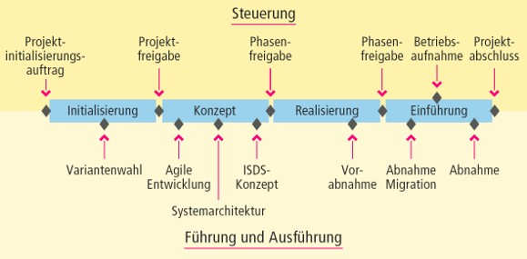
Phasen
- Initialisierungsphase (KW 7 - 10)
- Konzeptphase (KW 11 - 13) (14-16 Ferien)
- Realisierungsphase (KW 17 - 20)
- Einführung (KW 21 - 23)
- (Demos KW 24 - 25)
Phasenübergang (Meilensteine)
Am Ende einer Phase (= Meilenstein) «fragt» der Projektleiter den Auftraggeber: «Sind die Dokumente dieser Phase in Ordnung? Können wir X Stunden / Y Franken für die nächste Phase verwenden?»
Abzugebende Dokumente am Phasenende
- Initialisierungsphase: Studie und (Grob-)Projektplanung
- Konzeptphase: Konzeptbericht, Systemarchitektur, ISDS-Bericht
- Realisierungsphase: Realisierungsbericht, Detailplanung
- Einführung: Einführungsbericht, (Schlussbericht gemäss IPA) (Projektstand für 4. LJ)
- (Demo)
Demonstrationen / Präsentationen
KW 24 und 25
| UW | KW (2026) | 306 | 300 |
1 | 5 | Gruppenbildung Initialisierungsantrag | |
2 | 6 |
Terminal Portainer
| |
3 | 7 | ||
4 | 8 | ||
5 | 9 | Initialisierungsphase/Studie | |
6 | 10 | Inhaltliche Aspekte ISDS Inhaltliche Aspekte Infrastrukturentwurf (LB1) | |
7 | 11 | ||
8 | 12 | Konzeptphase Anforderungen an Infrastruktur definieren | |
9 | 13 | LB2 Vorbereitung | |
| Frühlingsferien | 14-16 | ||
10 | 17 | Konzept und ISDS-Bericht, Architekturentwurf publizieren | LB2 |
11 | 18 | ||
12 | 19 | Realisierung | SSH-Tunnel |
13 | 20 | ||
14 | 21 | Einführung | Projektinfrastruktur ans Internet anbinden |
15 | 22 | ||
16 | 23 | Schlussbericht | |
17 | 24 | Demo: Projektanbindung (LB1) | |
18 | 25 | Präsentationen | |
19 | 26 | Präsentationen Reserve | |
|
| ||
LBV
Leistungsbeurteilungsvorgabe
Modulnummer 300 (Modulversion 4.0 vom 18.03.2021)
Modultitel Plattformübergreifende Dienste in ein Netzwerk integrieren
Titel LBV Modul 300 - 2 Elemente -Teile eines Projektberichts / Praktische Umsetzungsarbeit
Übersicht LBV mit zwei LB Erstes Element: In den Phasenberichten des parallel unterrichteten Moduls 306 werden die im Modul 300 erarbeiteten Kompetenzen angewand.
Zweites Element: In 3er bis 4er Gruppen verschiedene Netzwerkdienste installieren, konfigurieren und in Betrieb nehmen sowie Schnittstellen und Abhängigkeiten zwischen den Diensten prüfen
Anzahl Elemente 2
Elementnummer 1
Beschreibung Die Handlungsziele 1 – 3 und 7 werden in Zusammenhang mit der Projektarbeit erarbeitet und beurteilt. Das Modul wird in Kombination mit Modul 306 unterrichtet.
Zu überprüfende Handlungsziele
1 Ermittelt aus Vorgaben die erforderlichen Services und leitet nötige Anforderungen ab.
2 Erarbeitet ein Konzept für die Integration der Services gemäss Vorgaben und definiert Sicherheitsmassnamen.
3 Konfiguriert die benötigten Services gemäss Vorgaben und überprüft
deren Funktionalität anhand der Anforderungen.
7 Dokumentiert das Gesamtsystem so, dass es jederzeit nachvollzogen
werden kann.
Prüfungsform Projektbericht
Gewichtung in % 50
Richtzeit (Empfehlung) 20
Bewertungskriterien Evaluation und Beschrieb der Systemarchitekur im Konzeptbericht. Gewichtung ca. 25%. Im Projektbericht integrierter ISDS-Bericht. Gewichtung ca. 25%. Umsetzung einer Plattform zum Betrieb des Projektprototypen. Gewichtung ca. 25% (Dieser Teil bedingt Anwendbarkeit im Projekt; wenn diese nicht gegeben ist, werden die drei anderen Kriterien zu je 33.3% gewichtet) Dokumentation der Systemarchitektur und anderer Teile des Gesamtsystems. Gewichtung 25%
Praxisbezug Bildungsplan Systemtechnik B2.2 Konzipieren Sicherheitsmassnahmen und planen die Umsetzung C2.2 Erstellen das Konzept unter Berücksichtigung aller Abhängigkeiten C2.3 Installieren die Dienste
Anzahl Elemente 2
Elementnummer 2
Beschreibung Erstellung eines IP-Konzepts. Definition von Schnittstellen zwischen den Diensten. Arbeitsplanung (Team). Installation und Konfiguration von drei bis vier Serverdiensten
Zu überprüfende Handlungsziele
1 Ermittelt aus Vorgaben die erforderlichen Services und leitet nötige Anforderungen ab.
2 Erarbeitet ein Konzept für die Integration der Services gemäss Vorgaben und definiert Sicherheitsmassnamen.
3 Konfiguriert die benötigten Services gemäss Vorgaben und überprüft
deren Funktionalität anhand der Anforderungen.
4 Konfiguriert Netzwerkverbindungen und überprüft deren Funktionalität
5 Integriert verschiedene Services und Plattformen zu einem Gesamtsystem und testet die Integration.
6 Grenzt allfällige Fehler systematisch ein, protokolliert diese und leitet
Massnahmen zur Fehlerbehebung ein.
7 Dokumentiert das Gesamtsystem so, dass es jederzeit nachvollzogen
werden kann.
Prüfungsform Praktische Umsetzungsarbeit
Gewichtung in % 50
Richtzeit (Empfehlung) 4
Bewertungskriterien Prüfung des IP-Konzepts. Gewichtung 10%. Schnittstellen Tests (Vollständigkeit und Korrektheit). Gewichtung 10%. Arbeitsplanung aus welcher die wichtigsten Arbeitsschritte ersichtlich sind. Gewichtung 10%. Korrekte Installation der geforderten Dienste. Gewichtung ca. 20%. Korrekte Konfiguration gemäss Anforderungen. Gewichtung ca. 20%. Funktionstests aller Dienste. Gewichtung ca. 30%.
Hilfsmittel Selbsterstellte Dokumentation zu allen Diensten. Internetzugriff im Rahmen der normalen Konfigurationstätigkeit ist erlaubt. Kommunikation übers Internet ist nicht zulässig
Praxisbezug Bildungsplan Systemtechnik B2.2 Konzipieren Sicherheitsmassnahmen und planen die Umsetzung B3.3 Setzen Anpassungen im Netz um und dokumentieren diese C2.2 Erstellen das Konzept unter Berücksichtigung aller Abhängigkeiten C2.3 Installieren die Dienste
Bewertungsraster LB1
Bewertung LB1 (Gruppenbewertung):
75% aus Konzeptbericht: (50%: Architekturentwurf, 25% ISDS-Bericht)
25% aus realisiertem Projekt
Kriterium
| Bereich |
| Anforderungen an Infrastruktur ist klar definiert | Architekturentwurf (50%) |
| Komponenten der Architektur sind identifiziert und spezifiziert | |
| Schnittstellen innerhalb der Architektur und gegen Aussen sind identifiziert und spezifiziert | |
| Benötigte DNS-Einträge werden aufgelistet und erklärt | |
| Die Anbindung des HTTP-Endpunkt an das Internet wird erklärt und mit einer Netzwerkskizze sichtbar gemacht | |
| Gefährdete Daten sind bezeichnet |
25% ISDS-Bericht |
| Potenzielle Risiken sind analysiert | |
| Abwehrmassnahmen sind definiert | |
| Es werden keine unnötigen Daten gespeichert. Alte Daten werden gelöscht. (spezifiziert) | |
Die Projektwebsite ist unter dem im Konzept bezeichneten URL erreichbar.
|
25% Realisierung im Projekt |
| Die Website verfügt über ein gültiges SSL/TLS Zertifikat | |
| Ein Portscan zeigt keine unnötig offenen Netzwerkports | |
| Wichtige Projektressourcen sind publiziert | |
| Total | Max 48 Punkte |
Generell
- Mindestens ein aus dem Internet erreichbarer Webendpunkt.
- Primär soll er Zugang zu Projektfunktionalität bieten
- Sekundär ist es Möglich dort eine Präsentationssite für das Projekt zu publizieren:
- Darstellung des Projektzieles für Interessenten
- Publikation der Projektphasenberichte
- Projektmanagement-, Dokumentations- oder Kollaborationstools für das Projektteam
- Repository für Projektdaten (Quellcode, Dokumentation)
Architekturentwurf:
- Auswahl einer geeigneten Architektur für den Betrieb der Projektinfrastruktur bis Sommer 2024
- Erklärung der Systemkomponenten
- Auswahl der Infrastruktur für den Betrieb (Variantenevaluation):
- Smartlearn-Online-Umgebung per Tunnel ans Internet anhängen:
- A: Weiterleitung von HTTP-Verbindungen vom zentralen Reverseproxy
- B: Anbindung an dedizierter öffentlicher IP-Adresse
- (beide Varianten werden per SSH-Tunnel realisiert. (Anleitung folgt))
- Selbstorganisierte Umgebung in eigener oder zugemieteter Infrastruktur
Anforderung: volle Kontrolle über Hostbetriebssystem.
- Smartlearn-Online-Umgebung per Tunnel ans Internet anhängen:
- Betrieb eines Webservers
- Auswahl geeigneter Produkte
- Anbindung des Webservers ans Internet mit Erklärung und Netzwerkdiagramm
- URL für Webendpunkte definieren:
Vorschlag: https://superprojekt.m300.smartlearn.ch evt. weitere als Subdomain. - Anforderungen an DNS definieren
- Konkrete Records benennen
ISDS-Dokument:
Schützenswerte Daten bezeichnen:
- Gefahren des Missbrauchs aufzeigen und erklären
- Möglichst sparsamer Umgang mit möglicherweise gefärdeten Daten
- Wer könnte Interesse an diesen Daten haben (Expositionsanalyse)
- Sicherheitsmassnahmen definieren und umsetzung planen
Netzwerksicherheit gewährleisten:
- Zugriffe auf Infrastruktue beschränken
- Welche Dienste müssen vom Internet her erreichbar sein?
- Umsetzung im Architekturentwurf
Zertifkatsmanagement für Webserver TLS/SSL
- Wie werden Zertifikate für Webendpunkte ausgestellt und erneuert?
Realisierung der konzeptionierten Teile
- Betrieb eines Webservers
- Auswahl geeigneter Produkte
- URL für Webendpunkte definieren:
Vorschlag: https://superprojekt.m300.smartlearn.ch evt. weitere als Subdomain. - Anforderungen an DNS definieren
- Konkrete Records benennen
- Netzwerk ist ausreichend geschützt
Modulidentifikation
300 Plattformübergreifende Dienste in ein Netzwerk integrieren
16.08.2021 | Version: 4
System Management
Kompetenz
Konfiguriert plattformübergreifende Services nach Vorgabe für eine heterogene Systemumgebung. Nimmt die Services in Betrieb, führt Tests durch und dokumentiert das Gesamtsystem.
Objekt
Clients, Server (File-, Print-, DNS-, DHCP-, Directory-Services) und Umsysteme mit unterschiedlichen Betriebssystemen in einem einfachen Netzwerk.
Handlungsziele
1.Ermittelt aus Vorgaben die erforderlichen Services und leitet nötige Anforderungen ab.
Handlungsnotwendige Kenntnisse:
1.Kennt die Einsatz- und Konfigurationsmöglichkeiten von vorgegebenen Betriebssystemen und Services.
2.Kennt die Vorgehensweise für die Analyse von Anforderungen.
2.Erarbeitet ein Konzept für die Integration der Services gemäss Vorgaben und definiert Sicherheitsmassnamen.
Handlungsnotwendige Kenntnisse:
1.Kennt die wichtigsten inhaltlichen und formalen Regeln, die bei der Erstellung eines Konzeptes einzuhalten sind.
2.Kennt die Vorgehensweise zur Definition von Testfällen.
3.Kennt die wichtigsten Schnittstellen und ihre Eigenschaften innerhalb einer heterogenen Systemumgebung.
4.Kennt die anzuwendenden Schutz- und Sicherheitsmassnahmen für Services.
3.Konfiguriert die benötigten Services gemäss Vorgaben und überprüft deren Funktionalität anhand der Anforderungen.
Handlungsnotwendige Kenntnisse:
1.Kennt die übliche Vorgehensweise bei der Inbetriebnahme von Services (z.B. installieren, starten, testen).
2.Kennt betriebssystemspezifische Konzepte zur Konfiguration von Services (z.B. Konfigurationsdateien, Registry, systemweite/benutzerspezifische Konfiguration).
3.Kennt die unterschiedlichen Konzepte, Systembefehle und Hilfsprogramme für die Benutzer- und Rechteverwaltung (z.B. User-ID, Zugriffsrechte, Gruppenmitgliedschaft, Standardrechte, Vererbung, Homeverzeichnis).
4.Kennt technische Möglichkeiten, um Ressourcen im Netzwerk durch Gruppen gemeinsam zu nutzen.
5.Kennt Testmöglichkeiten verschiedener Services.
4.Konfiguriert Netzwerkverbindungen und überprüft deren Funktionalität.
Handlungsnotwendige Kenntnisse:
1.Kennt die Elemente und Funktionen eines TCP/IP-Protokolls (z.B. MAC- und IP-Adressen, IP-Adressklassen, Netzmasken, Routing, Adress Resolution Protocol, TCP/UDP, wichtige Portnummern).
2.Kennt die Konfigurationsmöglichkeiten bei Netzwerkverbindungen.
3.Kennt Möglichkeiten, um die Netzwerkverbindungen zu testen.
5.Integriert verschiedene Services und Plattformen zu einem Gesamtsystem und testet die Integration.
Handlungsnotwendige Kenntnisse:
1.Kennt die Funktionsweisen der anzuwendenden Services (z.B. DHCP, DNS, Verzeichnisdienste, Fileservices, Printservices).
2.Kennt die Konfigurationsmöglichkeiten der anzuwendenden Services.
6.Grenzt allfällige Fehler systematisch ein, protokolliert diese und leitet Massnahmen zur Fehlerbehebung ein.
Handlungsnotwendige Kenntnisse:
1.Kennt den Aufbau und die wesentlichen Merkmale eines Testprotokolls.
2.Kennt verschiedene Testmethoden für die Funktionalität der Services (z.B. Blackbox, White-box).
3.Kennt Methoden zur systematischen Fehlereingrenzung (z.B. Ausschlussverfahren intakter Systeme).
4.Kennt Werkzeuge zur Fehleranalyse und Fehlerbehebung.
7.Dokumentiert das Gesamtsystem so, dass es jederzeit nachvollzogen werden kann.
Handlungsnotwendige Kenntnisse:
1.Kennt die Bedeutung einer Dokumentation zur Sicherstellung und Nachvollziehbarkeit von Arbeitsergebnissen.
2.Kennt die wichtigsten inhaltlichen und formalen Regeln, die bei der Dokumentation von Arbeitsergebnissen einzuhalten sind.
01 Teil 1
Terminals und Tools
AusgangslageIn diesem Modul werden wir auf drei verschieden Linux-Servern Dienste konfigurieren. Diese besitzen keine grafische Benutzeroberfläche. Sie müssen per Terminal / Kommandozeile bedient werden. Dies soll jedoch so einfach und komfortabel wie möglich vorbereitet werden.
|
Auftrag
Ziel ist es, die Arbeitsumgebung für dieses Modul einzurichten, mit benötigten Tools auszustatten und diese zu konfigurieren.
Entscheiden Sie, von welcher Maschine mit grafischer Oberfläche aus Sie die Servermaschinen bedienen: vmLP1 mit Linux oder vmWP1 mit Windows.
Auf der vmWP1 ist das Windows Terminal (https://aka.ms/terminal) installiert.
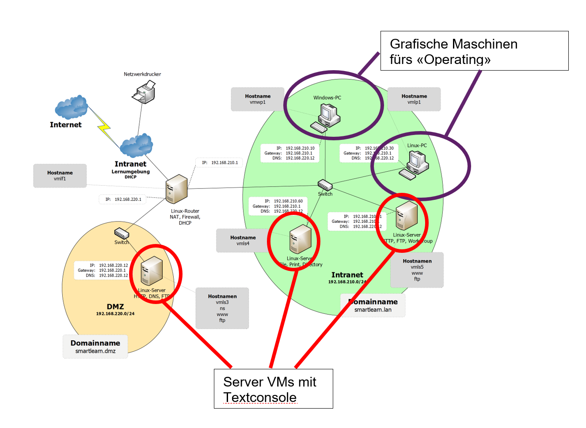
Begriffe aus der Welt der Kommandozeile
CLI: Command-Line-Interface, direktes Eingeben von Befehlen auf der Kommandozeile, meist in einer Shell.
Shell: Programm zur Entgegennahme und Ausführung von Befehlen meist interaktiv über eine Kommandozeile aber auch automatisiert über ein Shellscript. Typische Beispiele: unter Linux Bash, csh, zsh, unter Windows: cmd.exe, PowerShell.
Prompt: Eingabeaufforderung der Shell. Kann meist angepasst werden. In der Bash z.B. vmadmin@vmLS3:~$
Terminal: Gerät oder Programm zur Kommunikation mit einem Computer über ein CLI. Verbindung über serielles Interface (RS232) oder über das Netzwerk. Linux hat virtuelle Textkonsolen (meist 4). Diese können mit alt-F1 – alt-F4 umgeschaltet werden (aus dem grafischen GUI muss alt-ctrl-Fn verwendet werden).
Wichtige Dinge müssen richtig eingestellt sein: Tastaturbelegung auch für Sondertasten, Terminalemulation (für Farbe, Rahmengrafik).
SSH die Secure Shell
SSH – die SecureSHell
Das wichtigste Zugriffsprotokoll, um auf die Server aus der Ferne („remote“) übers Netzwerk zuzugreifen ist SSH. Es wird entweder in einer Shell als Kommando gestartet oder ist in einem Programm eingebaut (z.B. Putty unter Windows)
Alle im Folgenden behandelten Funktionen beziehen sich auf das Linux Kommandozeilenprogramm ssh. Wenn Sie mit einer anderen Umgebung (z.B. Putty) arbeiten, müssen Sie in der Dokumentation nachsehen, ob und wie das realisiert werden kann.
Verbindung zu einem Server aufbauen:
Starten Sie zur Vorbereitung vmLS3, lassen Sie sich auf der Textkonsole den Fingerprint des Server-Keys anzeigen:ssh-keyscan localhost | ssh-keygen -lf -
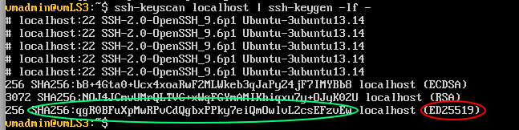
Testen und erklären Sie folgende Kommandozeilen (und Optionen)
ssh 192.168.220.13
Stimmt der Fingerprint?
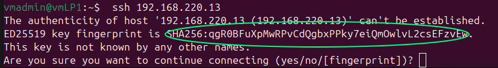
ssh root@192.168.220.13 oder ssh 192.168.220.13 -l root
Funktioniert das root-Login?
Erzeugen Sie sich auf vmLP1 ein Schlüsselpaar zum passwortlosen Login auf den Servern:
ssh-keygen
Setzen sie auf produktiven Systemen unbedingt eine Passphrase, auf unserem Lernsystem können Sie diese weglassen. Wo werden Public- und PrivateKey gespeichert.
Sie können den PublicKey auf den Servern hinterlegen. Danach brauchen Sie kein Passwort mehr zum einloggen.
ssh-copy-id 192.168.220.13 oder PublicKey auf dem Server nach .ssh/authorized_keys
kopieren, auch bei anderem user.
Erfolgskontrolle:
Gute Zusammenfassung erweiterten Funktionen: https://www.digitalocean.com/community/tutorials/ssh-essentials-working-with-ssh-servers-clients-and-keys
Clipboard-Manager
Häufig besteht das Bedürfnis nicht nur einen Platz im Copy/Paste-Speicher zu halten. Welche Programme stehen unter Ubuntu 20.04 zur Verfügung? Was wären alternative Vorgehensweisen?
Editoren
Welche Editoren kennen Sie (auf der Kommandozeile, im GUI (Linux/Windows))?
Folgende Grundfunktionen sollten Sie bedienen können (ergänzen Sie):
- Copy/Paste
- Block auswählen, verschieben
- Search/Replace
- …
Filemanager
Welche Filemanager kennen und benutzen Sie (auf der Kommandozeile, im GUI (Linux/Windows)?
Filebrowser
Wie betrachten Sie den Inhalt eines Files (auf der Kommandozeile, im GUI (Linux/Windows)?
Kennen Sie das Kommandozeilenprogramm less? Probieren sie es aus!
Passwortmanager
In einer produktiven Umgebung müssen Sie die vielen Zugangsdaten sicher verwalten. Welche Tools dazu kennen Sie?
Datenaustausch
Datenaustausch zwischen den beteiligten Systemen und der Aussenwelt ist eine häufig benötigte Funktionalität. Sie müssen viele Möglichkeiten kennen und anwenden können. Nennen Sie die wichtigsten Möglichkeiten.
Kennen Sie weitere praktische Tools?
Meine Toolbox
Meine Toolbox
ssh - die sichere Shell
Die Bedienung der Kommandozeile eines entfernten Rechners über eine Netzwerkverbindung gehört zu den grundlegendsten Elementen der Plattformadministration.
Während diese früher mit unverschlüsselter Authentizierung und Datenübermittlung per telnet und rsh (remote Shell) geschah wir dies heute mehrheitlich mit der 1995 geschaffenen Software SSH (Secure Shell) gemacht. Interessant ist die Geschichte dieses Projekts: es ist als privates Projekt gestartet. Später wurde es standardisiert und gemeinschaftlich weiterentwickelt:
https://de.wikipedia.org/wiki/Secure_Shell
Aufruf
ssh user@host
oder
ssh -l user host
Eine Verbindung zu Host host (hostname oder ip) mit Benutzer user wird aufgebaut.
ssh user@host command
Eine Verbindung wird aufgebaut das Kommando command ausgeführt und die Verbindung wieder beendet.
Kopieren von Files per ssh
scp (Secure Copy)
Scp ist ein interner Mechanismus von ssh, keine weiteren Voraussetzungen sind nötig.
scp localfile user@host:remotefile (Kopie von lokal nach remote)
scp user@host:remotefile localfile (Kopie von remote nach lokal)
scp user@host1:remotefile user@host2:remotefile (Kopie von remote1 nach remote2)
sftp
Spezieller ssh Modus, der per default eingeschaltet ist. Es ist auch möglich nur sftp zu aktivieren, “normales” ssh aber nicht zu erlauben.
Beispiel: filestash.gibb.ch
sftp user@host
Interaktiver Modus wird gestartet. Kommandos: ls, cd directory, get file, put file, get -r directory, exit,…
rsync
Zusätzliches Programm, das meist ssh als Transportweg verwendet. Es muss lokal und remote installiert sein. Es ermöglicht einfachen Abgleich ganzer Verzeichnisbäume und kann auch für Backups eingesetzt werden.
Beispiel:
rsync -rav --progress --delete localdir user@host:remotedir
Verzeichnis localdir wird mit remotedir auf host abgeglichen. Man kann den Fortschritt beobachten.
Manualpage
man ssh oder online zB.:
https://linux.die.net/man/1/ssh
Kommandozeilenparameter
-i | Identitiyfile definieren |
-X | Graphische Oberfläche remote ansprechbar machen (X-Forward) |
-F | Konfiguratiopnsfile angeben |
-o | einzelne Option anpassen |
-N -T | kein remote Kommando ausführen, kein Terminal verwenden |
-p port | Verbindung auf Portnummer port aufbauen anstatt auf Port 22 |
-v | debug-Ausgabe, auch mehrfach ( -vvv) |
SSH-Server: sshd
Der sshd wird meist als service (von systemd) gestartet.
Manueller start: sshd
Konfiguration in /etc/ssh/sshd_config
Optionen
Viele Eigenschaften lassen sich genauer Einstellen. Hier ein wichtiges Beispiele
PasswordAuthentication definiert, ob und wann Authentizierung mit Passwort erlaubt ist
Alle Optionen:
man ssh_config oder https://linux.die.net/man/5/ssh_config
Konfigurationsfile
Dort werden die Abweichnungen zum Standardverhalten definiert. Auch die Identität (pro Host) kann angepasst werden.
- Globale Konfiguration in
/etc/ssh/ssh_config - per User Konfiguration in
~/.ssh/config - separates Konfig-File, das per -F Parameter angegeben wird.
SSH-Tunnels
TCP-Tunnels
siehe nächstes Kapitel
SSH kann auch SOCKS-Proxy (-D) und Layer2 Tunnel (-w) . Damit lässt sich ad-Hoc ein VPN mit SSH aufbauen.
Interaktiver Modus von ssh
Ermöglicht die Eingabe von Portforwardings oder sogar lokalen Befehlen. Er muss mit der Konfigurationsoption EnableEscapeComandline=true ermöglicht werden. Das Escapezeichen ist im Normalfall ~ Das ist bei der CH-Tastatur ein “Totzeichen”, das auf ein weiteres Zeichen wartet, in der VMRC muss deshalb zusätzlich ein Leerzeichen getippt werden.
Statrten der internen Kommandozeile:
~C oder ~<space>C
Danach erscheint ein ssh> - Prompt.
Dort lassen sich mit L oder R interaktiv neue Tunnel aufbauen (oder auch abbauen).
.ssh/config
Die Datei ~/.ssh/config erlaubt diverse “Shortcuts”: Damit man nicht immer alles (Hostname, User, Port, spezielles Zertifikat) angeben muss, kann man sich in dieser Datei die Shortcuts anlegen.
Nehmen wir an, auf einem RaspberryPi (srv07.iot-lan.company.com) heisst der User Pi, und es ist ein für alle zu verwendenden Zertifikat iot-zert hinterlegt. Auch wurde Port 22 auf 2222 geändert.
sttat jedesmal ssh pi@srv07.iot-lan.company.com -i ~/.ssh/iot-zert -p 2222 anzugeben, kann die .ssh/config Datei wie folgt ergänzt werden, so dass man mit “ssh rpi-hzg” einlogen kann:
nano ~/.ssh/config
Host rpi-hzg
HostName srv07.iot-lan.company.com
User pi
IdentityFile ~/.ssh/iot-zert
Port 2222
IdentitiesOnly yes
Parameter
Host rpi-hzg: Definiert den Alias für die VerbindungHostName: Der eigentliche Hostname/ServerUser: Benutzername für die VerbindungIdentityFile: Pfad zum privaten Schlüssel (ohne .pub!)IdentitiesOnly yes: Nutzt nur die angegebene IdentityFilePort: Der alternative ssh Port
Hinweise
Der öffentliche Schlüssel (
iot-zert.pub) muss bereits im~/.ssh/authorized_keysdes RaspberryPi seinDer Benutzer
pimuss auf dem RaspberryPi existierenDer private Schlüssel (
iot-zert) sollte nicht mit.pubenden
ssh-agent / gnome-key-ring
Single Sign On SSO
Hat man mit ssh-copyid den public Key auf einen Server kopiert, damit passwortloses einloggen funktioniert, und eine Passphrase beim SSH-Key gesetzt, dann muss man zwar kein Passwort eintippen, aber man muss die Passphrase eingeben.
Konzept: Der ssh-agent ist ein Hintergrunddienst, der SSH-Passphrases zwischenspeichert (cached), sodass sie nicht bei jeder SSH-Verbindung neu eingeben werden müssen.
Kontrolle, ob er läuft: (Listet die Einträge auf)
ssh-add -l
Starten eines Agenten, nur falls keiner läuft
eval “$(ssh-agent)”
Key hinzufügen:
ssh-add ~/.ssh/id_rsa
# Passphrase eingeben: SML12345
Auf Ubuntu mit GUI:
- ssh-agent wird meist von gnome-keyring gestartet
eval "$(ssh-agent)"wäre falsch → zweiter Agent!
Zusammenspiel
| Tool | Zweck |
|---|---|
ssh-keygen | erstellt Schlüssel + Passphrase |
ssh-agent | cached entschlüsselte SSH-Keys im RAM |
gnome-keyring | speichert SSH-Passphrases dauerhaft |
ssh-copy-id | verteilt Public Keys |
Alternative: gpg-agent
Wenn gpg häufig benutzt wird (oder Hardware Tokens wie YubiKey / Smartcard) dann kann/sollte auf gpg-agent gewechselt werden. Es dürfen aber nicht beide agent gleichzeitig laufen.
SSH Tunneling
SSH
SSH kann viel mehr als nur remote einloggen:
- Grafikanzeige/Display umleiten
- Netzwerkverkehr tunneln
Zum Beispiel die Grafikanzeige umleiten: Ich bin nicht an meinem Arbeitsplatz, kann mich aber von einem anderen Unix-PC per SSH auf meinen Ubuntu-PC einloggen. Ich kann dann Thunderbird auf meinem Ubuntu-PC starten, das GUI wird aber lokal bei mir auf dem “anderen-pc” angezeigt. Mit der Option “-X” wird gesagt, dass die Grafikausgabe über die SSH Verbindung geschickt werden soll:
local-pc:$ ssh -X ich@server
server:$ thunderbird (oder xeyes)
Wir wollen aber die Option “Tunneling” verwenden.
SSH Tunneling
Alle Interfaces oder nichts
Bevor wir ins Tunneling einsteigen, kurz ein Review von speziellen Netzwerk Adressen:
- 0.0.0.0
- 127.0.0.1
Im Modul 129 (Netzwerke haben sie gelernt, dass 0.0.0.0/0 das ganze Internet bedeutet. Hier benutzen wir aber nicht ein Subnetz (kein /0), sondern wollen zum Ausdruck bringen: Alle meine lokalen Interfaces. Das heisst lo0, eth0, und weitere falls vorhanden.
Aufgabe: Führe “ip addr” auf vmLP1 und dann auf vmLS3 aus! Wieviele Netzwerk-Interfaces sind vorhanden?
Beispiel 1) Apache auf allen Interfaces
Stellen Sie sich vor, auf der Firewall vmLF1 ist ein Webserver installiert. Die vmLF1 hat drei Interfaces: WAN/RED, LAN/GREEN, DMZ/ORANGE. Auf welchen Interfaces soll der Webserver Anfragen entgegen nehmen. Vielleicht nur auf dem WAN, vielleicht aber auf allen drei. Wenn man alle drei Interfaces aktivieren möchte, schreibt man im Apache Konfig File: 0.0.0.0:80 (teilweise *:80).
Beispiel 2) MySql nur local
Die MySQL Datenbank soll aber aus gar keinem Netz erreichbar sein. Dann schreibt man 127.0.0.1:3306 im mysql.conf File. Man kann dann nur noch auf Mysql zugreifen, wenn man direkt auf dem Server ist und beim mysql command den Host als 127.0.0.1 oder “localhost” angibt.
Zusammenfassung
- 0.0.0.0 (Zugang über alle Netzwerkkarten, eth0, wifi0, docker0, etc.)
- 127.0.0.1 (Zugang nur vom Server aus)
- oder die IP des Interface direkt angeben (bspw. 192.168.210.31)
Local und remote Forwarding
(siehe auch PPT)
- Der Tunnel hat eine Richtung, einen Eingang
- Wird der Tunnel in die “gleiche” Richtung wie der SSH Aufbau verwendet: -L (Eingang ist lokal), sonst -R (Eingang ist remote)
- Auf beiden Seiten des Tunnels angeben, welche TCP Ports verwendet werden
- Port-Syntax: mit -L kommt zuerst LOCAL, mit -R kommt zuerst REMOTE
- -L locale-Interface-IP:localer-Port:remote-Interface-IP:remote-Port
- -R remote-Interface-IP:remote-Port:locale-Interface-IP:localer-Port
MySQL auf localhost
MySQL auf vmLS3
Beispiel Zugriff von vmLP1 auf eine MySQL DB auf vmLS3, welche nur von vmLS3 über localost ansprechbar ist.
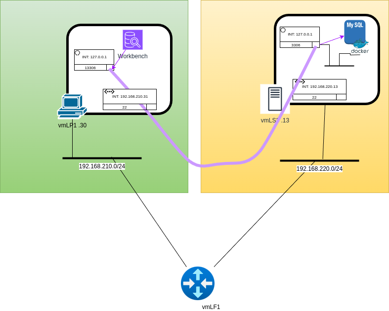
MySQL in Docker auf vmLS3
vmls3:$ docker run -d \
--name my-mysql \
-e MYSQL_ROOT_PASSWORD=my-secret-pw \
-p 127.0.0.1:3306:3306 \
mysql:latest
Den mysql client installieren
sudo apt install mysql-client-core-8.0
Kontrolle, ob 3306 wirklich nur via 127.0.0.1 erreichbar ist (Zeile mit “3306” suchen, muss “127.0.0.1” angegeben sein)
ss -tlpn
mysql -h 127.0.0.1 -u root -p
create database LS3LOKAL;
exit
Tunnelaufbau von vmLP1
vmadmin@vmLP1:~$ ssh -L 127.0.0.1:13306:127.0.0.1:3306 vmadmin@192.168.220.13
Häufig wird die erste IP Adresse weggelassen, das entspricht dann 0.0.0.0. So würde auch auf dem eth0 von vmLP1 der MySQL Port freigeschalten werden und damit könnten man von anderen Systemen, beispielsweise vmWP1 auch zugreifen. Das kann ein Sicherheitsrisiko sein. Besser also nur soweit nötig Ports freigeben.
Achtung: Man befindet sich nach dem Tunnelaufbau auf der vmLS3. Öffne auf der vmLP1 ein neues Terminal, damit der nächste Befehl auch wirklich von der vmLP1 aus ausgeführt wird.

Mysql-Test
vmadmin@vmLP1:~$ mysql -h127.0.0.1-P 13306 -u root -p
mysql> show databases;
+--------------------+
| Database |
+--------------------+
| LS3lokal |
Ohne Remote Login Shell
Beim Tunnelsetup wird man auf LS3 eingelogt. Dies ist nicht immer gewünscht. Mit den Optionen -fN wird keine remote Shell gestartet:
vmadmin@vmLP1:~$ ssh -fN -L 127.0.0.1:....
Problem: Nun kann der Tunnel nicht mehr mit exit beendet werden. Der ssh-Prozess muss mit kill beendet werden. Dazu muss die Prozess-ID gefunden werden. ps -aux | grep ssh listet alle ssh Verbindungen auf. Man sucht sich nun die Zeile mit dem Tunnelaufbau, und in der 2. Spalte steht die Prozess-ID (pid). kill <pid> terminiert den SSH Tunnel.
vmadmin@vmLP1:~$ ps aux | grep sshvmadmin 2707 0.0 0.1 162652 6912 ? Ssl 10:04 0:00 /usr/libexec/gcr-ssh-agent --base-dir /run/user/1000/gcrvmadmin 4307 0.0 0.1 8432 5760 ? S 10:19 0:00 /usr/bin/ssh-agent -D -a /run/user/1000/keyring/.sshvmadmin 8741 0.0 0.1 16840 5236 ? Ss 14:24 0:00 ssh -R 0.0.0.0:10050:127.0.0.1:8080 hop.asdfg.it -fNvmadmin 8743 0.0 0.0 7276 2304 pts/1 S+ 14:24 0:00 grep --color=auto sshvmadmin@vmLP1:~$ kill 8741
vmadmin@vmLP1:~$
SSH durch Firewall
SSH von vmL3 → vmLP1
SSH von vmL3 → vmLP1
Bauen Sie einen Tunnel, sodass man von vmLS3 auf die vmLP1 mit ssh verbinden kann. Dies geht nämlich nicht, da die Firewall vmLF1 Verbindungsaufbauten von der DMZ ins LAN unterbindet.
Wie umgeht man diese Firewall-Blockade?
Hinweis: Mit einem SSH-Tunnel, welcher von … zu … mit der Option -L|-R aufgebaut wird und den Ints:Ports …..
Wie lautet der ssh Tunnel Befehl und wie baut man danach von der vmLS3 eine SSH Verbindung zur vmLP1 auf?
Code-Aufgabe
Troubleshooting SSH
Clear Screen auf Smartlearn ausschalten.
Smartlearn löscht bei einem Login die Bildschirmausgabe. Somit werden ältere Fehlerausgaben auch gerade gelöscht, was nicht hilfreich ist. Dieses Verhalten kann man unterdrücken: Im File set-sreen.sh die Zeile 63 auskommentieren (tput clear), indem ein # vorangestellt wird
sudo +63 nano /usr/local/smartlearn/bin/set-screen.sh
Webserver hinter NAT
Webserver hinter NAT (vmLP1)
Auf vmLP1 läuft ein Webserver zu Testzwecken. Für eine Demo soll er vom Internet her erreichbar sein.
(Wir simulieren das Internet: vmLS3 ist das Internet, vmLP1 gleichzeitig Webserver und Webclient)
Webserver starten
Ein index.html anlegen (Ports kleiner 1024 sind für root reserviert, daher verwenden wir sudo).
echo 'Hier ist vmLP1' > index.html
sudo python3 -m http.server 80
Test mit Firefox
auf vmLP1: http://localhost
HTTP Demo
Wir wollen aber via vmLS3 auf vmLP1 kommen. Dazu braucht es einen Tunnel zwischen vmLS3 und vmLP1.
Wie lautet der SSH Befehl, damit man mit Firefox auf vmLS3:8123 zugreifen kann, und die Seite des vmLP1 angezeigt wird?
Es braucht einen SSH Tunnel, der wird auf vmLP1 gestartet und verbindet sich zu vmLS3. Auf vmLS3 muss der Port 8123 auf den Port 80 von vmLP1 zeigen. (Achtung, das Kommando wird nicht funktionieren auch wenn es richtig ist. Aber dazu mehr gleich danach. Teste zuerst auf vmLS3 mit: vmadmin@vmLS3:~$ wget 127.0.0.1:8123--2025-04-25 11:11:57-- http://127.0.0.1:8123/Connecting to 127.0.0.1:8123... connected.HTTP request sent, awaiting response... 200 OKLength: 15 [text/html]Saving to: ‘index.html’
index.html 100%[====================================================>] 15 --.-KB/s in 0s
2025-04-25 11:11:57 (2.13 MB/s) - ‘index.html’ saved [15/15]
vmadmin@vmLS3:~$
Wie lautet der ssh-Tunnel Befehl?
Code-Aufgabe
Mit Firefox von vmLP1 geht es aber nicht. Wieso geht es nicht?
http://192.168.220.13:8123 sollte die simple index.html Seite von vmLP1 anzeigen.
Kontrolliere auf vmLS3 mit ss -tlpn
Welche Ports laufen auf welchen Interfaces?
Neue Aufgabe
Was ist das Problem?
Der Port 8123 hört nur auf 127.0.0.1 und nicht etwa auf dem eth0 Interface 192.168.220.13.
GatewayPorts yes
Der ssh-Daemon von vmLS3 erlaubt per default nicht, dass ein Remote Tunnel alle Interfaces verwendet. Darum stellen wir GatewayPorts auf yes (Zeile 90) im File /etc/ssh/sshd_config:
vmadmin@vmLS3:~$ sudo nano +90 /etc/ssh/sshd_config
vmadmin@vmLS3:~$ sudo systemctl restart ssh.service
Nach dem Tunnelaufbau muss es so aussehen:
vmadmin@vmLS3:~$ ss -tlpnState Recv-Q Send-Q Local Address:Port Peer Address:Port Process LISTEN 0 128 0.0.0.0:8123 0.0.0.0:*
Firefox sollte nun die Seite http://192.168.220.13:8123 anzeigen.
Mehrzweckserver auf vmLS3
Wir arbeiten immer von einer grafischen Operating-Maschine aus.
Zur Auswahl stehen vmWP1 und vmLP1. In dieser Anleitung wird das Vorgehen von vmLP1 aus beschrieben. Dort sind die geeigneten Tools zur Remoteverbindung und zum Editieren von Files auf den Servern vorhanden.
Ebenfalls sehr empfehlenswert ist das Vorbereiten von SSH-Keys zur automatischen Authentifizierung.
Da wir häufig als root-User arbeiten, kann es sinnvoll sein, das die hinterlegten Keys auch das Einloggen als root ermöglichen.
Tipps:
- Arbeiten sie in der Remote-Konsole, da in der Webkonsole nicht alle Sonderzeichen funktionieren.
- Das Sonderzeichen "Tilde" (
~) erzeugen Sie mit (AltGr + ^). - Benutzen Sie unter Linux die automatische Vervollständigung der Befehle mittels <tab>!
Vorgehen:
Erzeugen eines Keypairs auf der Operating-Maschine (vmLP1 eingeloggt als vmadmin):
ssh-keygen -t ecdsaDefault-Werte mit <Enter> bestätigen, Passphrase (bei produktiven System zwingend) nach Wahl oder keine.
Sehen Sie sich das Keypair im Verzeichnis .ssh an!Mit der Option
-thaben sie den für das Schlüsselpaar verwendeten Algorhytmus angegeben. Nebenecdsaist auched25519eine gute Wahl.
Dies ist nun Ihr Schlüssel, den Sie für alle persönlichen Logins in diesem Modul verwenden können.
Die folgenden vier Schritte sollten Sie auf jedem neuen System mit ssh-Zugriff, das sie regelmässig verwenden, anwenden:
- Ablegen des erzeugten Public-Keys auf dem Server:
ssh-copy-id 192.168.220.13
Fingerprint (auf produktivem System nach Kontrolle) akzeptieren, Passwort eingeben.
- Erfolgskontrolle:
ssh 192.168.220.13
muss nun ohne Passworteingabe erfolgen.
Sehen Sie sich die Datei.ssh/authorized_keysan!
- Key auch für root-Login verwenden (sinnvoll, wenn häufig mit root-Rechten) gearbeitet wird:
Eingeloggt als vmadmin@vmLS3:sudo -iroot werden mit Login-Shelltail -n 1 ~vmadmin/.ssh/authorized_keys >> .ssh/authorized_keys
fügt den Public-Key von vmLP1 (aus .ssh-Verzeichnis von vmadmin) an die authorized_keys-Datei von root an.
- Erfolgskontrolle:
Ausloggen (2x Ctrl-D): Sie sind wieder vmadmin@vmLP1ssh root@192.168.220.13
muss nun auch ohne Passworteingabe erfolgen.
Vorgehen bei Erst-Inbetriebnahme eines Servers:
- Login per ssh-Public-Key ermöglichen (siehe vorheriger Abschnitt).
- IP-Adresse, Netzwerkkonfiguration und Internet-Konnektivität prüfen. Gegebenenfalls anpassen (für Server
/etc/netplan).
- DNS-Clientkonfiguration prüfen (Netplan, bei vmLP1 ist es sinnvoll network-manager-gnome zu installieren, dort gibt es den nm-connection-editor).
Bei der DNS-Clientkonfiguration sind zwei Dinge wichtig: IP-Adresse des verwendetes DNS-Servers. Für Tests ist es meistens besser nur einen zu verwenden. In produktiven Systemen aus Redundanzgründen meist mehrere.
- Hostname und Domain überprüfen und gegebenenfalls anpassen.
- Mit apt update und apt -y upgrade das System aktualisieren. Allenfalls neu starten.
- Sie können dies jetzt oder erst bei Bedarf für die Systeme vmLS4 und vmLS5 durchführen.
Dieser Container startet bei einem Reboot automatisch.
Disk part./format./mount
Einbinden einer weiteren Disk um Platz für Daten zur Verfügung zu stellen:
Auf vmLS3 gibt es eine 32GB grosse Disk, die dafür bereit steht. Wenn Sie mit der SSD arbeiten, müssen Sie diese Disk selber bereitstellen (Virtual Machine Settings Hardware).
Wir arbeiten als root auf vmLS3:
lsblk
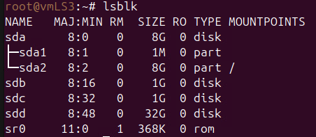
-> Die grosse Disk ist /dev/sdd
Wir partitionieren die Disk mit fdisk (heute häufig gdisk, bei sehr grossen Disks wegen GPT)
fdisk /dev/sdd neue Partition mit n erzeugen, default-Werte akzeptieren, mit w schreiben.
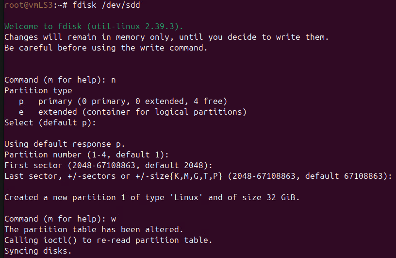
Kontrolle mit lsblk -> neue Partition ist /dev/sdd1
Partition formatieren (Dateisystem erzeugen) und Label setzen:
mkfs -t ext4 -L m300data /dev/sdd1
Kontrolle mit blkid
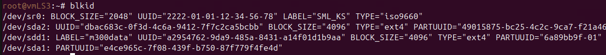
Erzeugen eines Mount-Punkts: mkdir /m300data
Einbinden ins Konfigurationsfile /etc/fstab durch anfügen der folgenden Zeile:LABEL=m300data /m300data ext4 defaults 0 0
(PS: parted macht obiges in einem Command, fdisk lässt sich nicht wirklich non-interactive verwenden:
Testen durch einhängen mit mount -a
Bei Misserfolg unbedingt Fehler berichtigen sonst klappt das Reboot nicht mehr!
Kontrolle mit mount und df -h

Zur Sicherheit: reboot
Wenn es nicht klappt: im emergency-Mode die fehlerhafte Zeile aus /etc/fstab auskommentieren!
Docker
Docker Installieren
Wir arbeiten als root auf vmLS3:
Verzeichnis auf grosser Disk für Docker vorbereiten:mkdir /m300data/docker
Das Verzeichnis /var/lib/docker per Symlink auf die grosse Disk verlagern:ln -s /m300data/docker /var/lib/docker
Installation ausführen:
apt install -y docker.io docker-compose-v2
(docker-compose-v2 ist neu in docker integriert (es ist ein cli-plugin) und wird mit dem Befehl docker compose (ohne Bindestrich) verwendet. docker-compose (v1) war ein externes Python-Script)
Optional: vmadmin zur Docker-Gruppe hinzufügen (er kann somit Docker-Kommandos ohne sudo ausführen):
usermod -aG docker vmadmin
Testen (auch als vmadmin möglich):docker run hello-world
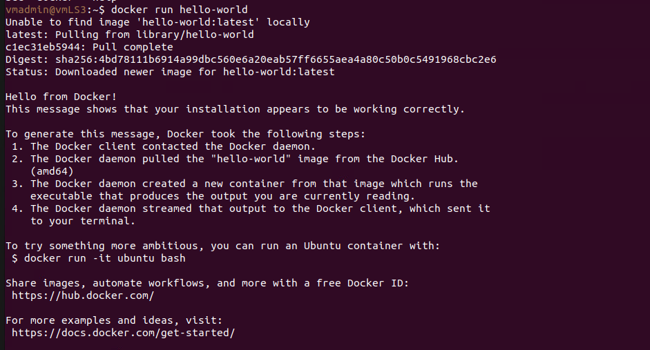
Infos zur Version:docker info
docker version
Portainer
Portainer installieren
Einerseits zu Demonstration, andererseits als GUI-Hilfsmittel um Docker zu Administrieren installieren wir Portainer:
Wir erzeugen ein sogenanntes Volume für Portainer:docker volume create portainer_data
Kontrolle mit docker volume ls
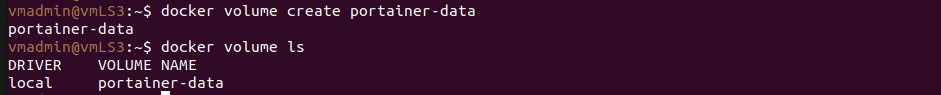
docker run -d -p 9000:9000 --name portainer --restart always -v /var/run/docker.sock:/var/run/docker.sock -v portainer_data:/data portainer/portainer-ce:lts
Im Firefox http://192.168.220.13:9000 aufrufen:
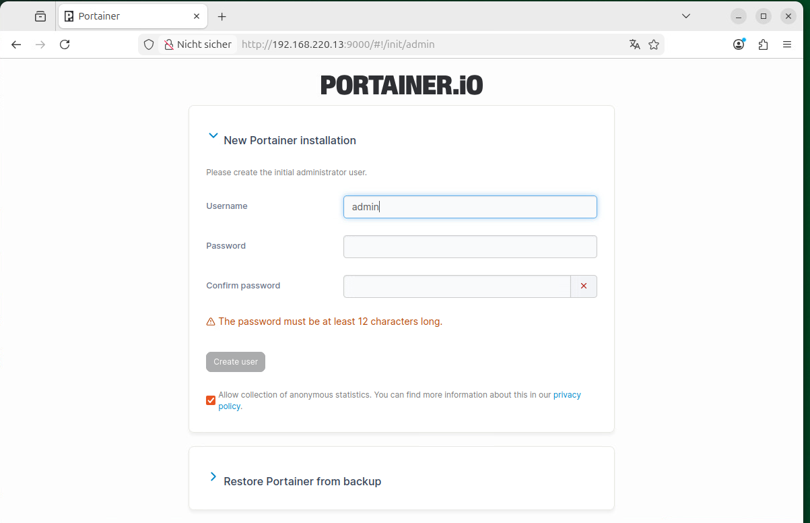
Als Passwort "sml12345sml12345" wählen (wegen Policy)
"Get startet" wählen. "local" wählen. Containers wählen.
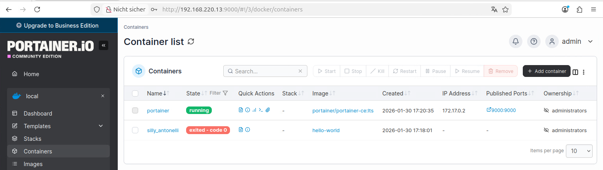
Sehen Sie sich im GUI um!
Docker Compose
Containerisierte Applikationen haben einen Bauplan:
Das sogenannte Image (enthält alle Dateien, auch dieses hat einen Bauplan (das Dokerfile))
Die Einbindung in die Umgebung (Interfacing): Volumes und Networks sind die wichtigsten.
Es können mehr als ein Container in den sogenannten Stack eingefügt werden.
Alles kann in einer Datei docker-compose.yml abgelegt werden.
Diese kann auf unterschiedliche Art gestartet werden.
1. Befehl docker-compose (python basiertes Script)
2. Befehl docker compose (in Docker ab 22.3)
3. Über die Docker-API mit einem 3rd-Party-Tool z.B. Portainer (Stack).
Referenzdokumentation:
https://docs.docker.com/reference/
Deployen sie zwei bis drei Beispiel-Applikationen und testen sie diese!
Yaml-Files sind menschen- und maschinenlesbar. Wie Python-Files muss die Einrückung genau stimmen. Es gibt Online-Editoren, z.B:
https://jsonformatter.org/yaml-formatter
Bei Awesome Compose gibt es eine Sammlung mit guten Beispielen. Wir wählen (weil Sie es auch schon gemacht haben) Wordpress:
https://github.com/docker/awesome-compose/blob/master/wordpress-mysql/compose.yaml
Bringen Sie Wordpress mit diesem yaml-File zum laufen; testen sie es kurz; falls sie es nicht mehr brauchen, räumen sie möglichst spurlos wieder auf (Löschen von Images, Conatainern und Volumes)
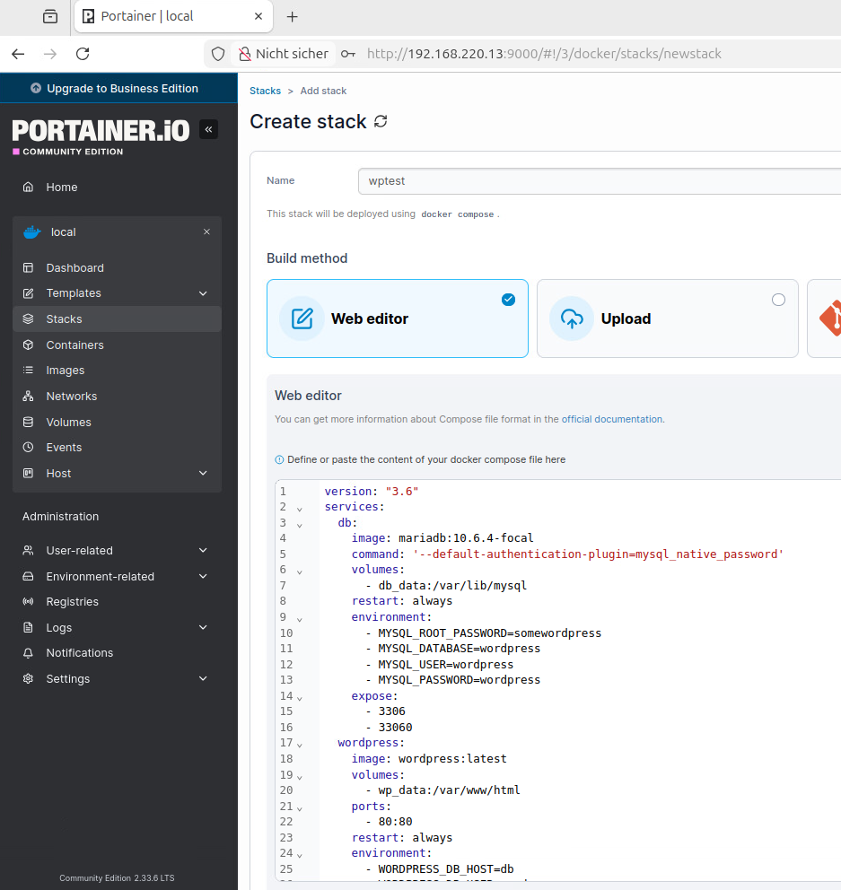
Das Deployen mit Portainer (Stacks - add Stack)
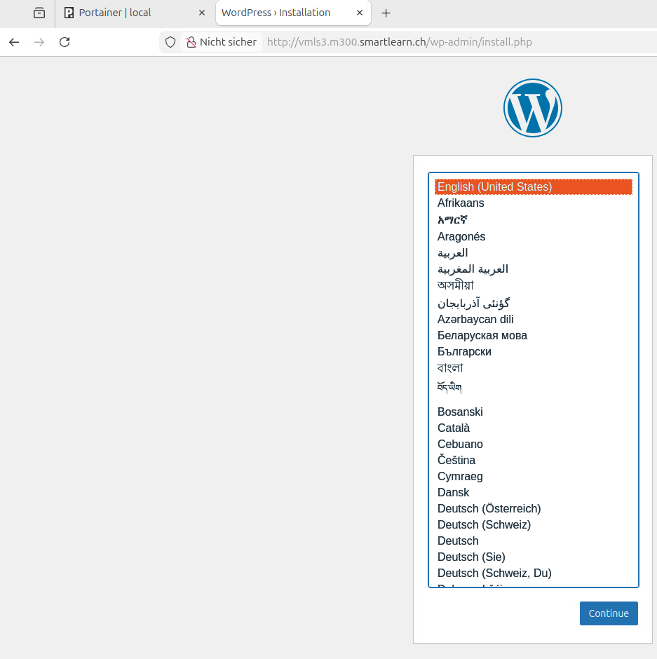
Webserver und -clients zu Testzwecken
Immer wieder ist es nötig, rasch einen HTTP-Server zu Testzwecken zu starten. Manchmal werden so auch lokale Daten auf einfache Art zu einem anderen System übertragen.
Hier werden einige Methoden vorgestellt.
Webserver mit Python:
python -m http.server 1234 Ein lokaler Webserver auf Port 1234 wird gestartet. Die Files im aktuellen Verzeichnis werden per HTTP ausgeliefert. Falls die Portnummer unter 1024 liegt, müssen root-Berechtigungen vorhanden sein (evt. sudo). Das Default-Port ist 3000.
Webserver mit php:
php -S localhost:8080 Ein lokaler Webserver auf Port 8080 wird gestartet. Die Files im aktuellen Verzeichnis werden per HTTP ausgeliefert. Falls die Portnummer unter 1024 liegt, müssen root-Berechtigungen vorhanden sein (evt. sudo).
Webserver mit netcat:
while true; do cat index.http | nc -l 8000; done Ein lokaler Webserver auf Port 8000 wird gestartet, die bei jedem beliebigen Request die Datei index.http ausliefert.
index.http:HTTP/1.1 200
OK Content-Type: text/html; charset=UTF-8
Server: netcat!
<!doctype html> <html><body><h1>A webpage served by netcat</h1></body></html>
Docker Container mit whoami
docker run -d -p 1234:80 traefik/whoami
Ein Testwebserver in einem Container wird gestartet. Das Hostport 1234 wird auf diesen Container verbunden. Der Webserver gibt als Response viele wichtige Infos über Client und Server. Er ist sehr geeignet für debugging-Zwecke.
HTTP-Clients zu Testzwecken
Die wichtigsten Webclients sind Browser. Alle Modernen Browser können Details (Header, Cookies und Anderes) im Webentwicklermodus anzeigen.
Wissen Sie, wie sie diesen bei ihrem bevorzugten Browser starten und bedienen?
HTTP-Clients auf der Kommandozeile:
Absolut Basics: Telnet (generischer TCP-Client):telnet www.gibb.ch 80
Trying 194.124.129.32...
Connected to smartlearn.ch. Escape character is '^]'. GET http://smartlean.ch HTTP/1.0
(Request mit zwei Zeilenumbrüchen abschliessen)HTTP/1.1 301 Moved Permanently Server: nginx/1.18.0 (Ubuntu) Date: Sat, 03 Feb 2024 14:06:12 GMT Content-Type: text/html Content-Length: 178 Connection: close Location: https://smartlean.ch/ <html> <head><title>301 Moved Permanently</title></head> <body> <center><h1>301 Moved Permanently</h1></center> <hr><center>nginx/1.18.0 (Ubuntu)</center> </body> </html>
Old-Style: wget
wget http://gibb.ch --2024-02-03 15:14:26-- http://gibb.ch/ Auflösen des Hostnamens gibb.ch (gibb.ch)… 194.124.129.15 Verbindungsaufbau zu gibb.ch (gibb.ch)|194.124.129.15|:80 … verbunden. HTTP-Anforderung gesendet, auf Antwort wird gewartet … 301 Moved Permanently Platz: https://gibb.ch/ [folgend] --2024-02-03 15:14:26-- https://gibb.ch/ Verbindungsaufbau zu gibb.ch (gibb.ch)|194.124.129.15|:443 … verbunden. HTTP-Anforderung gesendet, auf Antwort wird gewartet … 200 OK Länge: nicht spezifiziert [text/html] Wird in »index.html.1« gespeichert. index.html.1 [ <=> ] 420,73K --.-KB/s in 0,04s 2024-02-03 15:14:27 (9,52 MB/s) - »index.html.1« gespeichert [430831]
Vielseitig auch für Scripts: curlcurl http://gibb.ch <html> <head><title>301 Moved Permanently</title></head> <body> <center><h1>301 Moved Permanently</h1></center> <hr><center>nginx</center> </body> </html>
gut lesbarer Output: httpie:http http://gibb.ch HTTP/1.1 301 Moved Permanently Connection: keep-alive Content-Length: 162 Content-Type: text/html Date: Sat, 03 Feb 2024 14:13:28 GMT Location: https://gibb.ch/ Server: nginx <html> <head><title>301 Moved Permanently</title></head> <body> <center><h1>301 Moved Permanently</h1></center> <hr><center>nginx</center> </body> </html>
Apache2 Installation
Im Internet gibt es tausende Anleitungen. Wichtig ist dort: Ubuntu 24.04, sowie die Version, welche apt installiert: apache2.4.
Beispielanleitung: https://linuxconfig.org/setting-up-a-secure-apache-server-on-ubuntu-24-04
sudo apt install apache2
Die Dateien (index.html, etc) holen: sftp, wget, kreativ sein. (sftp <user>@filestash.gibb.ch)
mkdir -p /var/www/html/myweb
chown -R www-data:www-data /var/www/html/myweb/
$ sudo nano /etc/apache2/sites-available/myweb.conf
# Insert the following configuration:
<VirtualHost *:80>
ServerAdmin admin@myweb.linuxconfig.org
ServerName myweb.linuxconfig.org
DocumentRoot /var/www/html/myweb
ErrorLog ${APACHE_LOG_DIR}/error.log
CustomLog ${APACHE_LOG_DIR}/access.log combined
</VirtualHost>
sudo a2ensite myweb
Jetzt DNS A Record erfassen
Bemerkungen
Zusätzliche Notizen, Abweichungen vom Auftrag
Bemerkungen
DNS Server
Wir stellen nun einen DNS-Server für unsere Umgebung bereit. Dabei haben wir zwei Optionen:
1. Standalone Installation auf unserem Mehrzweckserver vmLS3.
2. DNS-Server mit Webmin-Webgui als Container.
Das Ergebnis und die Funktionalität sind identisch. Beide Varianten haben aber ihre spezifischen Vor- und Nachteile.
Zählen Sie diese auf und entscheiden Sie sich für eine Variante!
Evaluation DNS
Vor- und Nachteile, Entscheidumg
Als Vorarbeit muss noch der lokale DNS-Proxy systemd-resolvd abgeschaltet werden:
systemctl stop systemd-resolved.service und systemctl disable systemd-resolved.service
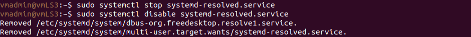
weiter muss im File /etc/resolv.conf (wenn dies ein Symlink ist, diesen löschen mit rm /etc/resolv.conf) der Eintrag 127.0.0.53 durch einen funktionierenden DNS-Server (z.B. 8.8.8.8) ersetzt werden.
DNS Ressourcen
Ressourcen zu DNS
https://ubuntu.com/server/docs/how-to/networking/install-dns/
https://wiki.ubuntuusers.de/DNS-Server_Bind/
(Laufwerk I: ist die IET-Share)
DNS-Tools:
I:\sh-modules\iet-300\release2022\03_Arbeitsblaetter\AB300-02.pdf
Ursprüngliches Arbeitsblatt:
I:\sh-modules\iet-300\release2022\03_Arbeitsblaetter\AB300-02.pdf
Theorierepetition zu DNS aus Modul 239:
I:\sh-modules\iet-239\release_2020\04_Folien\fo239-201-repetition.pptx
I:\sh-modules\iet-239\release_2020\04_Folien\fo239-204-bind-config.pptx
Transportprotokolle TCP/UDP:
I:\sh-modules\iet-239\release_2020\04_Folien\fo239-202-tcpudp.pptx
Empfehlungen von Switch zu den Zeitwerten in Zonenfiles:
https://securityblog.switch.ch/2014/02/06/zone-file-recommendations/
DNS-Server als Container
version: '3.6'
services:
bind:
image: eafxx/bind
restart: unless-stopped
ports:
- 53:53/tcp
- 53:53/udp
- 10000:10000
expose:
- 10000
volumes:
- 'bind:/data'
environment:
- WEBMIN_ENABLED=true
- WEBMIN_INIT_SSL_ENABLED=false
- WEBMIN_INIT_REFERERS=vmls3.m300.smartlearn.ch
- WEBMIN_INIT_REDIRECT_PORT=10000
- ROOT_PASSWORD=sml12345
- TZ=Europe/Zurich
volumes:
bind:https://github.com/elmerfdz/docker-bind
Achtung: Im Screenshot (unten) ist das Passwort nicht gleich dem yaml!
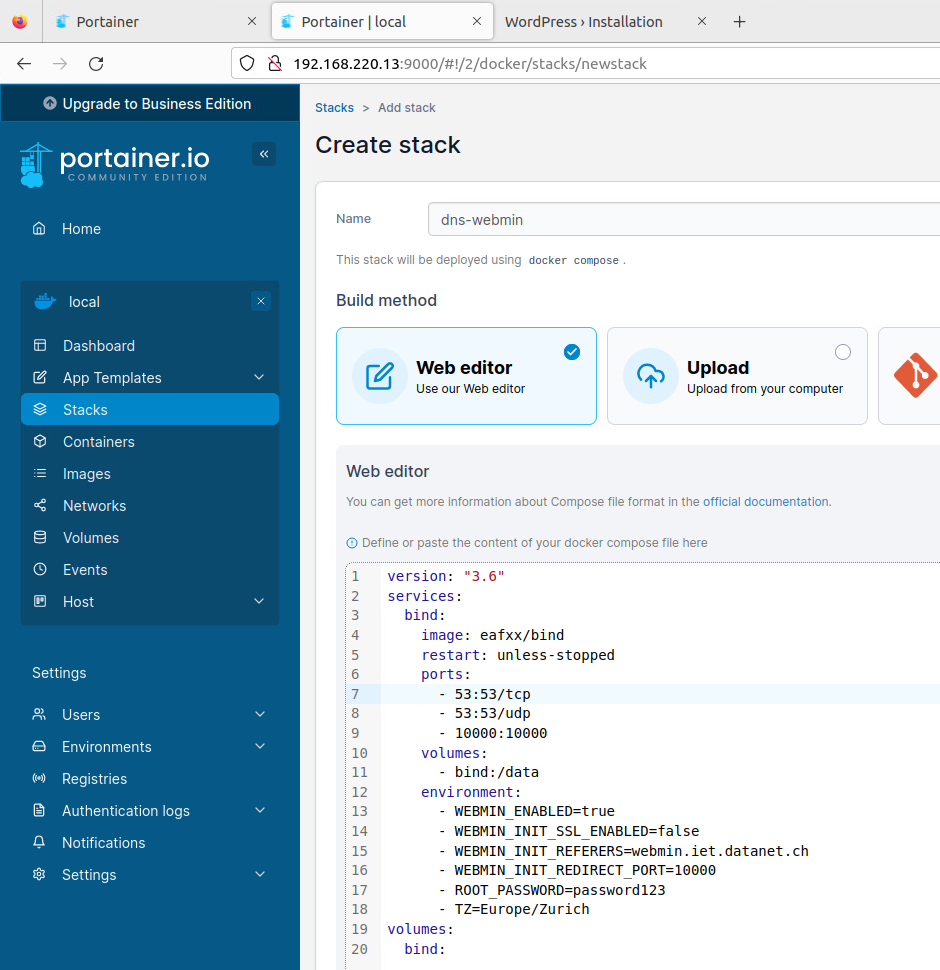
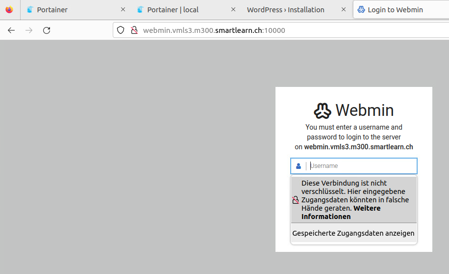
Anmelden mit root.
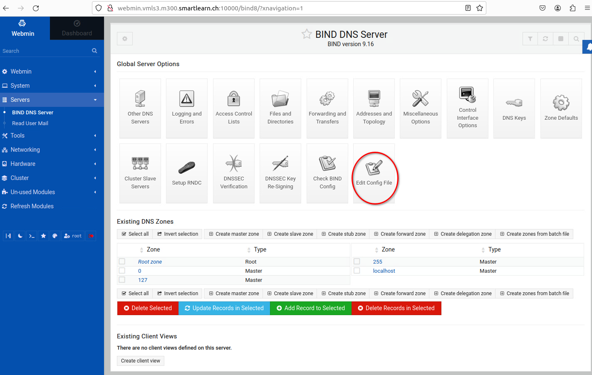
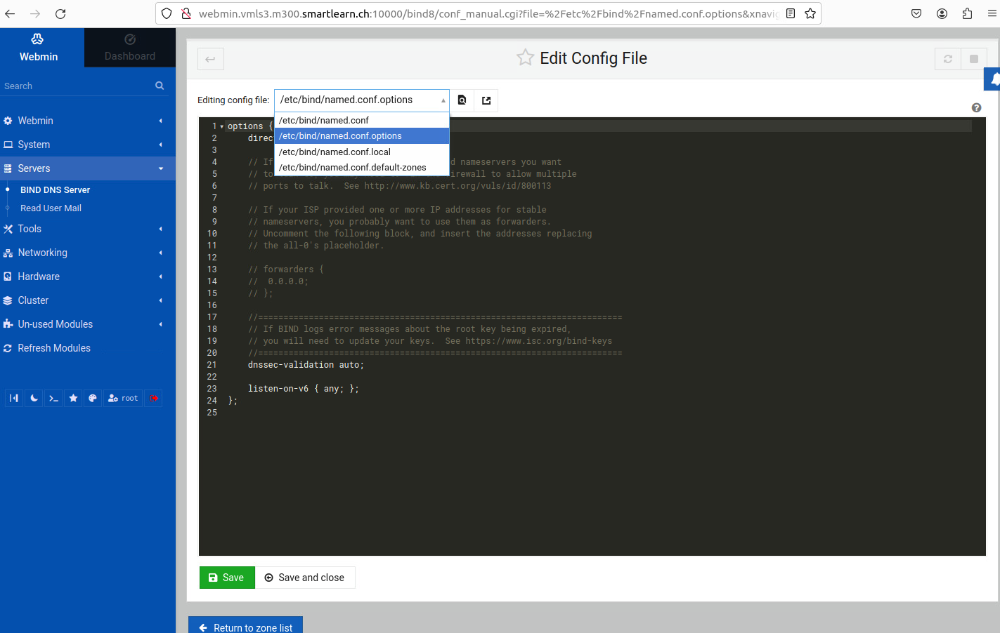
DNS-Server standalone
apt install bind9
DNS-Server Konfiguration
Grundkonfiguration
Ihr DNS-Server soll für folgende Zonen eingerichtet werden:
Forward-Zone
lan.m300.smartlearn.ch
Die Zone m300.smartlearn.ch (DMZ) ist im öffentlichen Internet abgedeckt.
Reverse Zones
210.168.192.in-addr.arpa
220.168.192.in-addr.arpa
Dazu sind folgende Änderungen nötig:
Allgemeine Optionen, Berechtigung für rekursive Auflösung, Forwarders
/etc/bind/named.conf.options:
options {
directory "/var/cache/bind";
forwarders {
8.8.8.8;
};
allow-recursion {
192.168.210.0/24;
192.168.220.0/24;
};
dnssec-validation no;
listen-on-v6 { };
auth-nxdomain no; # conform to RFC1035
empty-zones-enable no; # less noise in log
};Einbindung der lokalen Masterzonen
/etc/bind/named.conf.local:
Achtung: Wer über das GUI “create Master Zone” ausführt, wird keinen Erfolg haben. Das Zonenfile wird im Container unter /var/lib/bind abgelegt, es sieht eigentlich alles gut aus.
Korrektur: Man kann sich in den container mit docker exec -it dns_bind-bind-1 bash einloggen und die Files nach /etc/bind verschieben, danach im named.conf.local File die Pfade anpassen und restarten.
// lokale zonen
//
zone "lan.m300.smartlearn.ch" {
type master;
file "/etc/bind/db.lan.m300.smartlearn.ch";
};
// lokale zonen
// reverse
zone "220.168.192.in-addr.arpa" {
type master;
file "/etc/bind/db.192.168.220";
};
zone "210.168.192.in-addr.arpa" {
type master;
file "/etc/bind/db.192.168.210";
};Damit Webmin von den neu vorbereiteten Zonen weiss, müssen sie eine beliebige Zone im GUI-von Webmin erzeugen:
"Create master zone" -> test und test@test.com als Email eintragen. So sehen Sie auch Ihre Zonen in der Zonenliste.
Wenn man die lokalen Zonen in /etc/bind/named.local erstellt und Bind neu gestartet wird (z.B. mit dem Stop-Knopf oben rechts), erscheinen
die Zonen in der Zonentabelle:
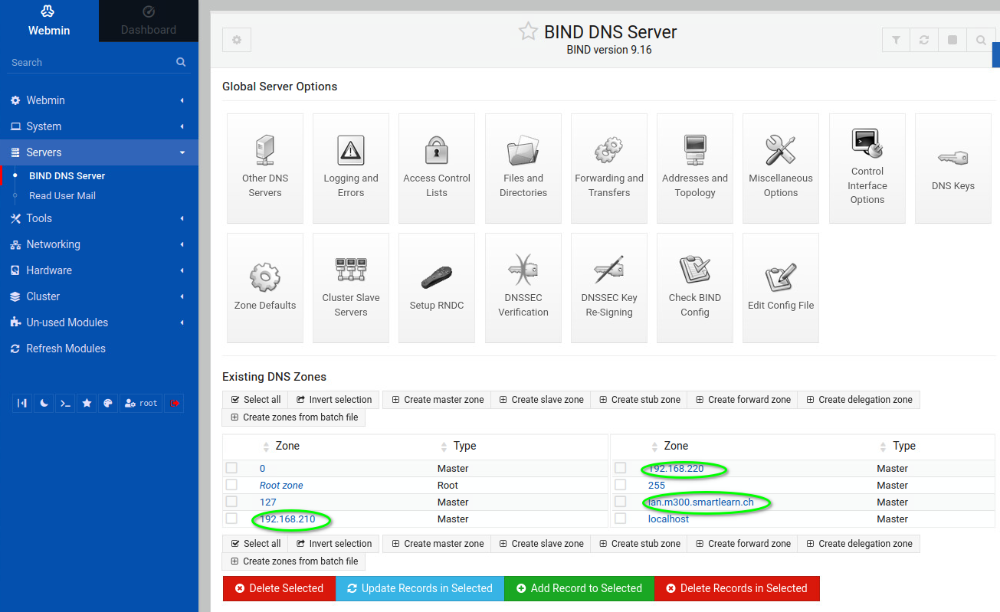
Und die eigentlichen Zonendaten.
Hier gibt es nur je einen Testeintrag für die inhaltlich wichtigen Records
Die Zonenfiles sind im /etc/bind (wenn Sie DNS als Container verwenden müssen Sie das entsprechende Volume finden, z.B.
hier: /m300data/docker/volumes/dns-webmin_bind/_data/bind/etc)
/etc/bind/db.lan.m300.smartlearn.ch
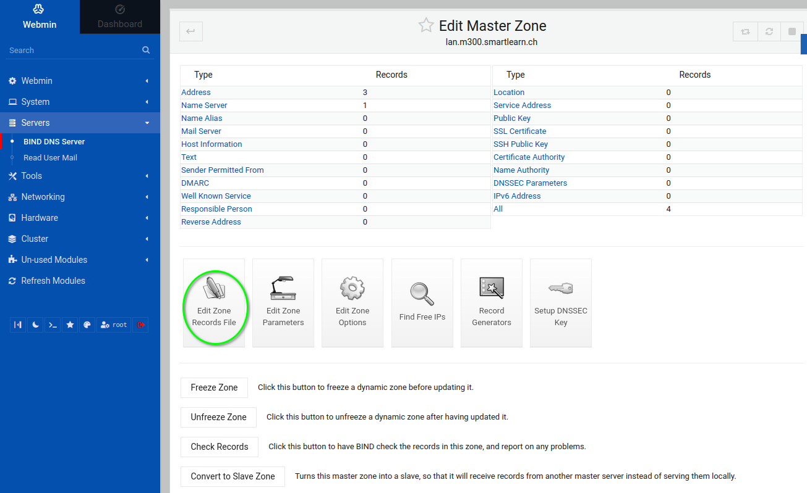
$ttl 3600
lan.m300.smartlearn.ch. IN SOA ns.m300.smartlearn.ch. root.m300.smartlearn.ch. (
2024020802
3600
600
1209600
3600 )
lan.m300.smartlearn.ch. IN NS ns.m300.smartlearn.ch.
test IN A 3.4.5.6/etc/bind/db.192.168.210
; BIND data file for 210.168.192.in-addr.arpa
;
$TTL 86400 ; (1 day)
@ IN SOA ns.m300.smartlearn.ch. root.m300.smartlearn.ch. (
2024020801
14400
1800
1209600
3600 )
;
@ 172800 IN NS ns.m300.smartlearn.ch.
1 IN PTR vmlf1.lan.m300.smartlearn.ch.
99 IN PTR test99.smartlearn.lan.Erstellen Sie das Zonefile für 220.168.192.in-addr.arpa selbst.
Bei Änderungen an den Zonen muss Bind neu gestartet werden:
Bind im Container
oder
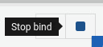
Bind Standalone:systemctl restart named
Kontrollieren Sie das Logfile:
Bind im Container
Output des Containers (z.B. im Portainer)
Bind Standalone:journalctl -u named (less wird mit q beendet, G geht an den Schluss)
Kontrollieren Sie im Minimum pro Zone einen Testeintrag und stellen sicher, dass sie diesen auch verändern können:
vmadmin@vmLP1:~$ nslookup 192.168.210.99 192.168.220.13 99.210.168.192.in-addr.arpa name = test99.smartlearn.ch. vmadmin@vmLP1:~$ nslookup 192.168.220.99 192.168.220.13 99.220.168.192.in-addr.arpa name = test99.smartlearn.ch. vmadmin@vmLP1:~$ nslookup test.lan.m300.smartlearn.ch 192.168.220.13 Server: 192.168.220.13 Address: 192.168.220.13#53 Name: test.lan.m300.smartlearn.ch Address: 3.4.5.6
Ergänzen Sie nun für alle Hosts in der LAN-Zone die Einträge in Forward- und Reversezone.
Für die zwei Host in der DMZ tragen Sie die Records nur in der Reverse-Zone ein.
Testen Sie auch dies!
zB als Stichprobe.:vmadmin@vmLP1:~$ nslookup vmls5.lan.m300.smartlearn.ch 192.168.220.13 Server: 192.168.220.13 Address: 192.168.220.13#53 Name: vmls5.lan.m300.smartlearn.ch Address: 192.168.210.65 vmadmin@vmLP1:~$ nslookup 192.168.220.13 192.168.220.13 13.220.168.192.in-addr.arpa name = vmls3.m300.smartlearn.ch.
Mit rndc querylog können Sie das Logging für alle Anfragen aktivieren (bis zum nächsten Neustart)
Entfernen Sie die Testeinträge.
Wenn Alles funktioniert, stellen Sie sie die DNS.-Clientkonfiguration um:
Alle Hosts Ihrer Umgebung sollten nun diesen DNS verwenden.
Dies geschieht in /etc/netplan (vmls), im Networkmanager-GUI (vmlp1, hier können Sie auch eine zweite konfiguration anlegen und bequem umschalten) oder in den Adaptereinstellungen (vmwp1)
Auf dem Nameserver vmls3 selber sollten Sie nameserver 192.168.220.13 auch direkt in /etc/resolv.conf eintragen.
Als search-Domäne geben Sie lan.m300.smartlearn.ch (und optional als zweite m300.smartlearn.ch) an. Bei vmLP1 müssen sie dazu den nm-connection-editor starten.
Anleitung für vmLP1:
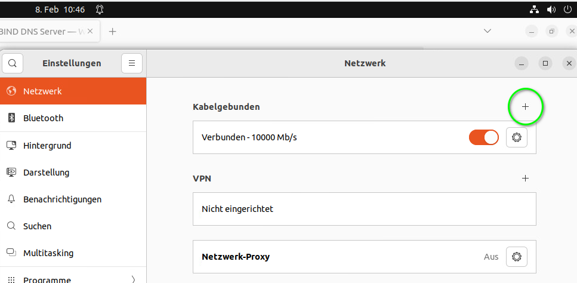
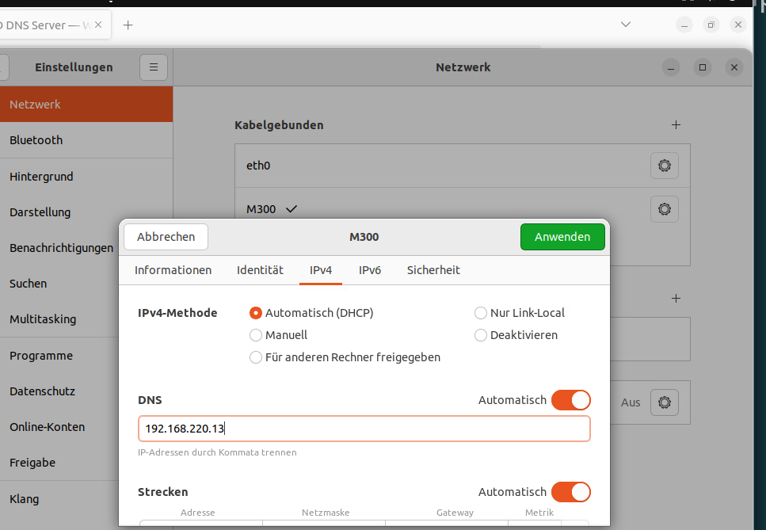
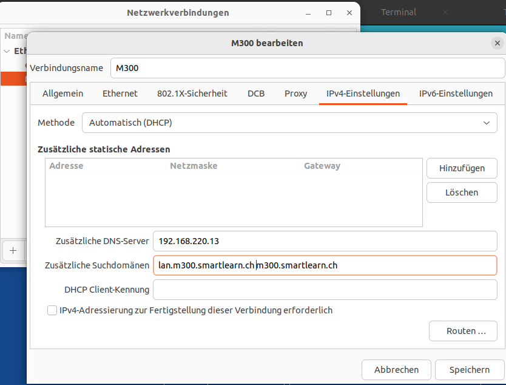
Erfolgskontrolle:
Konfigurationskontrolle:vmadmin@vmLP1:~$ resolvectl status Global Protocols: -LLMNR -mDNS -DNSOverTLS DNSSEC=no/unsupported resolv.conf mode: stub Link 2 (eth0) Current Scopes: DNS Protocols: +DefaultRoute +LLMNR -mDNS -DNSOverTLS DNSSEC=no/unsupported Current DNS Server: 192.168.220.13 DNS Servers: 192.168.220.13 DNS Domain: lan.m300.smartlearn.ch m300.smartlearn.ch
Die Auflösung geht nun ohne Angabe von DNS-Server und Domäne - auch bei normalen Befehlen:vmadmin@vmLP1:~$ nslookup 192.168.220.13 13.220.168.192.in-addr.arpa name = vmls3.m300.smartlearn.ch. vmadmin@vmLP1:~$ nslookup vmls3 Server: 127.0.0.53 Address: 127.0.0.53#53 Non-authoritative answer: Name: vmls3.m300.smartlearn.ch Address: 192.168.220.13 vmadmin@vmLP1:~$ nslookup vmls4 Server: 127.0.0.53 Address: 127.0.0.53#53 Non-authoritative answer: Name: vmls4.lan.m300.smartlearn.ch Address: 192.168.210.64
vmadmin@vmLP1:~$ ping vmlf1 PING vmlf1.m300.smartlearn.ch (192.168.220.1) 56(84) bytes of data. 64 bytes from vmlf1.m300.smartlearn.ch (192.168.220.1): icmp_seq=1 ttl=64 time=0.298 ms 64 bytes from vmlf1.m300.smartlearn.ch (192.168.220.1): icmp_seq=2 ttl=64 time=0.328 ms
DNS-Server Zusatzthemen
Advanced DNS
I:\sh-modules\iet-300\release2022\03_Arbeitsblaetter\AB300-02_DNSknowledge.pdf
Reverse-Proxy: Traefik
Als zentraler Eintrittspunkt für Anfragen vom Internet (gemeint ist meis das Web per HTTPS) ist ein sogenanner Reverseproxy die zurzeit meistgewählte Lösung.
Wir verwenden ein einfaches aber vielseitiges Produkt: den Traefik-Proxy: https://traefik.io/traefik/
Die Dokumentation von traefik finden Sie hier:
https://doc.traefik.io/traefik/
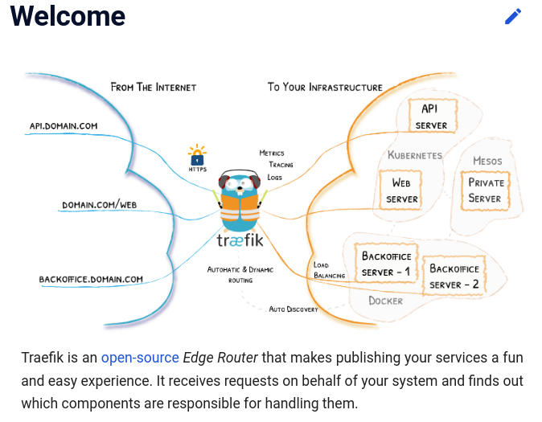
Wir richten diesen auf unserem Merzwekserver vmLS3 als Docker-Container mit Hilfe von Docker-compose ein:
Funktionsweise
Ein Reverseproxy entscheidet anhand des “Host” Feldes im HTTP Request, zu welchem Webserver er die Anfrage weiterleitet.
Ab HTTP Version 1.1 muss der Client nebst dem GET <file | URL > den “Host” mitschicken. Im Beipiel unten wird “/” von www.gibb.ch verlangt:
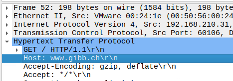
Ein Reverseproxy wie Traefik entscheidet anhand dieser Host-Info, welchem Server er die Anfrage weiterschicken soll:
- Alles mit Host= www.gibb.ch zur VM mit IP 192.168.220.11,
- alles mit Host= www.smartlearn.ch zur VM 192.168.220.12.
Virtual-Hosts bei Apache/nginx
Ein Apache kann mit dem Host mehrere Virtual-Host betreiben, er weiss nun, ob die Anfrage von “/” oder “index.html” für die Site www.gibb.ch oder www.smartlearn.ch ist.
(Web-)Proxy
Der Vollständigkeit halber sollte auch erklärt werden, was denn der “Proxy” ist.
Unser “Kantons-Proxy” kontrolliert den einkommenden Verkehr vom Internet. Der Proxy ist also in “unserem” Netz, wo der Firefox ist. Die Funktion des Proxy kann die Firewall übernehmen, oder eine eigene Hardware-Appliance sein. Der Browser schickt seinen Verkehr nicht zur Firewall, sondern Proxy, welcher dann auch die Daten erhält, welche vom Internet heruntergeladen werden. Der Proxy durchsucht die Daten nach Viren und Trojanern.
+---------------+ | Firefox | | (Client) | +---------------+ | | v +------------------+ | Proxy Server | | | +------------------+ | | v +---------------+ | Internet | | | +---------------+ | | v +-------------------+ | Rev-Proxy Server | | (Traefik, | +-------------------+ | | v +---------------+ | Local Area | | Network (LAN)| +---------------+ | | | | v v +-----------+ +-----------+ | Server1 | | Server2 | +-----------+ +-----------+
Auf andere TCP Ports weiterleiten
Ein Reverseproxy kann auch GET Request umschreiben: Falls www.example.com ein API hat, welches unter www.example.com/api erreichbar ist, zwar auf dem gleichen Server aber unter dem Port 5000, dann kann man dies entsprechend konfigurieren. Natürlich könnte man in der html Seite :5000 hinschreiben, aber das wird teilweise geblockt. Die Kantonsfirewall, respektive der Web-Proxy (nicht reverse!) lässt keinen Verkehr ins Internet, wenn nicht 80 oder 443 als TCP Port gilt. Mit einem Reverse Proxy kann man nun mitteils einer URL solche Anfragen “umbiegen”.
Installation und Konfiguration
docker network create traefik-proxy
Wiir erzeugen ein eigenes internes Netzwerk, an dem wir Dienste, die über den Proxy erreicht werden sollen angeschlossen werden.
mkdir -p /m300data/docker-containers/traefik
cd /m300data/docker-containers/traefik
In diesem Verzeichnis legen wir die Docker-compose-Datei und weitere Konfigurations- und Zertifikatsdateien für Traefik ab.
Danach erzeugen wir den Hash eines Zugangspasswortes. Dazu müssen wir das Tool htpasswd aus dem Paket apache2-utils verwenden:apt install apache2-utils
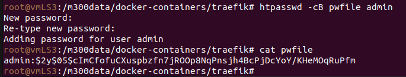
in der .env-Datei definieren wir vom Container verwendete Umgebungsvariablen. Dort wird auch der Passwordhash für den admin-User eingetragen. Das pwfile kann anschliessend gelöscht werden.
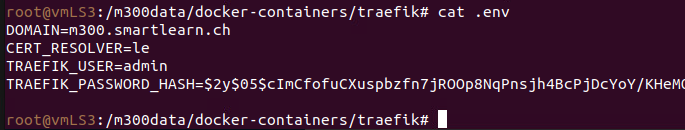
das docker-compose-File (unten als Codeblock zum Kopieren) (neu v3.6 verwenden)
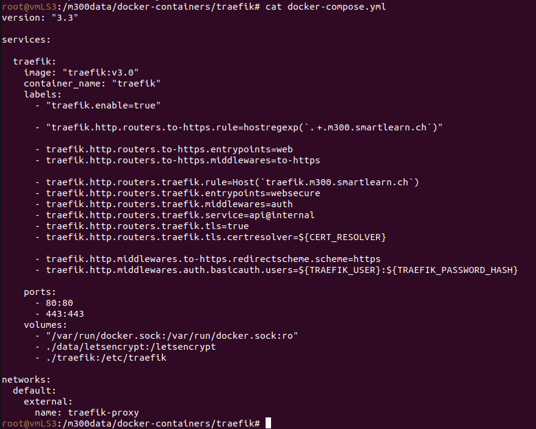
Erzeugen Sie die nötigen Unterverzeichnisse:
mkdir traefik traefik/certs traefik/certs/default data
Das traefik/traefik.yml-File ist die statische Konfiguration. Wenn hier etwas geändert wird, muss traefik neu gestartet werden.
entryPoints:
web:
address: ":80"
websecure:
address: ":443"
providers:
docker:
exposedByDefault: false
network: traefik-proxy
file:
filename: /etc/traefik/dynamic.yml
watch: true
certificatesResolvers:
le:
acme:
api:
insecure: false
debug: falseservices:
traefik:
image: "traefik:v3.6"
container_name: "traefik"
networks:
- traefik-proxy
labels:
- "traefik.enable=true"
- "traefik.http.routers.to-https.rule=hostregexp(`.+.m300.smartlearn.ch`)"
- traefik.http.routers.to-https.entrypoints=web
- traefik.http.routers.to-https.middlewares=to-https
- traefik.http.routers.traefik.rule=Host(`traefik.m300.smartlearn.ch`)
- traefik.http.routers.traefik.entrypoints=websecure
- traefik.http.routers.traefik.middlewares=auth
- traefik.http.routers.traefik.service=api@internal
- traefik.http.routers.traefik.tls=true
- traefik.http.routers.traefik.tls.certresolver=${CERT_RESOLVER}
- traefik.http.middlewares.to-https.redirectscheme.scheme=https
- traefik.http.middlewares.auth.basicauth.users=${TRAEFIK_USER}:${TRAEFIK_PASSWORD_HASH}
ports:
- 80:80
- 443:443
volumes:
- "/var/run/docker.sock:/var/run/docker.sock:ro"
- ./data/letsencrypt:/letsencrypt
- ./traefik:/etc/traefik
networks:
traefik-proxy:
external: true # wichtig, sonst wird neues Network angelegtDie traefik/dynamic.yml-Datei erlaubt neue Konfigurationsteile ohne Neustart wirksam zu werden. Wir definieren hier die TLS-Zertifikate.
tls:
stores:
default:
defaultCertificate:
certFile: /etc/traefik/certs/default/cert.pem
keyFile: /etc/traefik/certs/default/privkey.pemSpeichern Sie folgenden Dateien im Ordner certs/default:
Die Files sollten nun also folgenden Platz einnehmen:
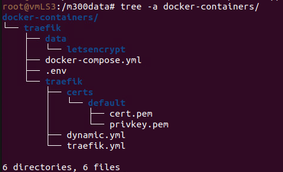
Inbetriebname
nun könne wir den Stack starten:
docker-compose up -d
auf neueren Systemen ohne Minus: docker compose up -d
Ohne den Parameter -d sehen Sie den Output im Terminal (Abbrechen mit ctrl-C)
Wordpress darf natürlich nicht mehr laufen…
Testen Sie traefik:
Es muss traefik.m300.smartlearn.ch auflösbar sein, und zwar vom Host, auf welchem der Browser läuft: nslookup.
Dann im Browser: https://traefik.m300.smartlearn.ch/dashboard/
Testen Sie traefik im Browser:
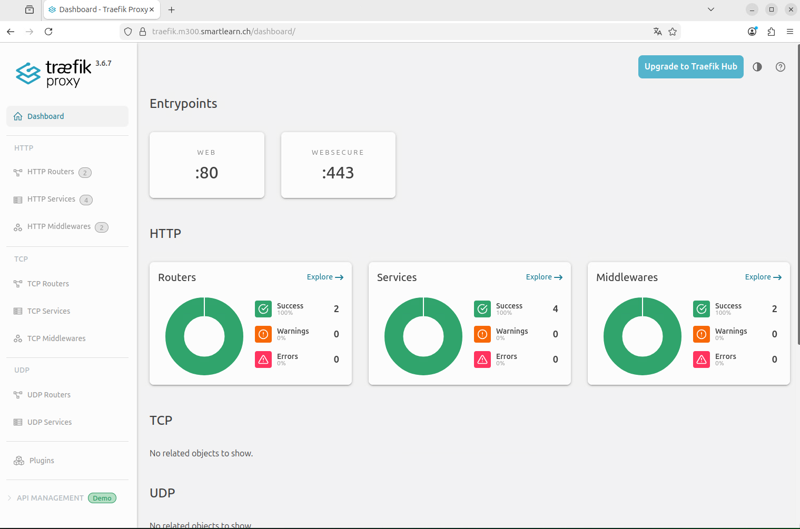
Auch das Zertifikat ist gültig:
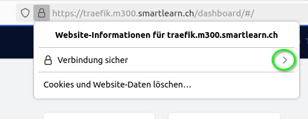
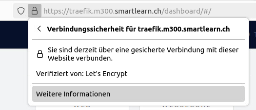
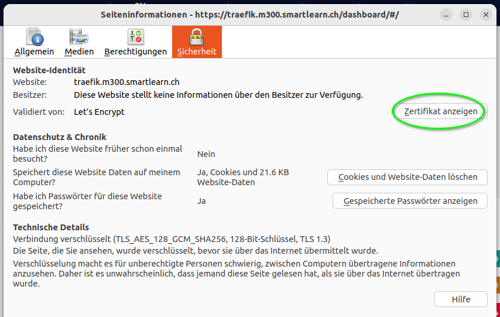
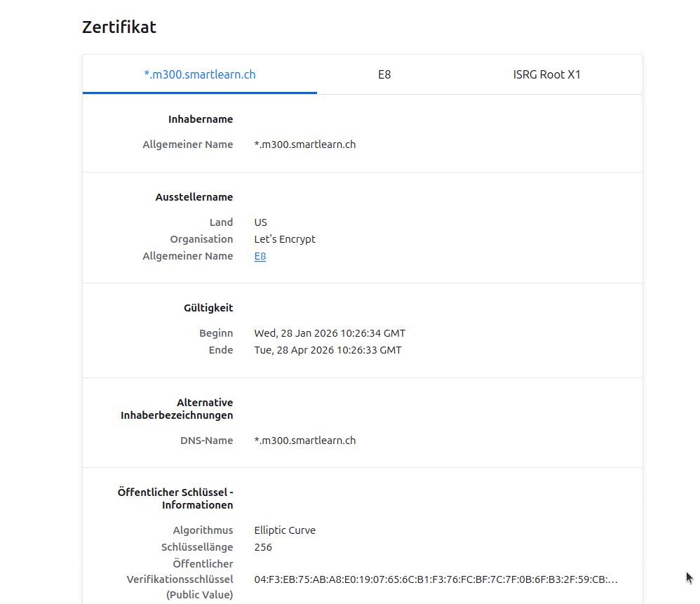
Beispielapplikation Wordpress hinter Traefik bringen
Stoppen Sie falls nötig den wordpress-Container. (Siehe Mehrzweckserver - Docker-Compose)
Ergänzen Sie die docker-compose Datei um folgende Zeilen im service-Abschnitt wordpress. Diese werden von Traefik automatisch gelesen:
labels:
- "traefik.enable=true"
- "traefik.http.routers.wordpress.entrypoints=websecure"
- "traefik.http.routers.wordpress.rule=HOST(`wordpress.m300.smartlearn.ch`)"
- "traefik.http.routers.wordpress.tls.certresolver=le"
- "traefik.http.services.wordpress.loadbalancer.server.port=80"
networks:
- traefik-proxy
- defaultLösche Sie folgende Zeilen:
ports:
- 80:80Ergänzen Sie zuunterst:
networks:
default:
traefik-proxy:
external: trueStarten Sie den Stack neu!
Ihr Wordpress ist nun hinter dem Proxy und mit einem gültigen Zertifikat ausgerüstet.
Es ist nun auf https://wordpress.m300.smartlearn.ch erreichbar.
Machen Sie dieselbe Änderung für Ihren webmin-bind oder falls bei Ihnen Bind nicht im Container läuft für eine whoami-Beispielapplikation.
M306 Projektintegration
Eingabe Projektname
Eingabe Projekt
Der Projektname muss als Domain-Komponente eines URL auftreten können zB.
https://www.super-projekt.m300.smartlearn.ch
Er besteht aus Buchstaben, Zahlen, Minus-Zeichen (von Umlauten wird abgeraten)
Er darf insbesondere nicht enthalten:
- Leerzeichen
- Underscore
Genaueres dazu:
https://cs.uwaterloo.ca/twiki/view/CF/HostNamingRules
Nur der Projektleiter des M306-Projekts füllt die folgende Abgabe aus:
Gruppenangaben
Teil 2
Zertifikate Theorie
Zertifikate erlauben
- die Identität eines Webservers zu überprüfen.
- Daten verschlüsselt auszutauschen.
Verschlüsselung
- assymetrisch (public/private key)
- symmetrisch (beide besitzen den selben Code)
Symmetrische Verschlüsselung
Gleicher Code zum Ver- und Entschlüsseln.
1000 mal effizienter pro Byte als asymmetrische Verschlüsselung
Asymmetrische Verschlüsselung
2 Schlüssel => Schlüsselpaar. Das Paar besteht aus “Public Key” und “Private Key”.
Einer verschlüsselt, der andere entschlüsselt.
(ssh-keygen erzeugt ein Schlüsselpaar, id_ed25519.pub und id_ed25519)
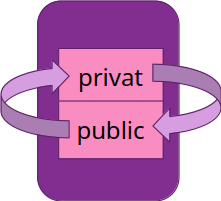
- Der Public Key ist im Internet öffentlich zugänglich.
Der Private Key bleibt lokal (=geheim).
Verschlüsseln/Entschlüsseln
Man kann zuerst mit dem Public Key oder dem Private Key verschlüsseln:
- Mit Public Key verschlüsselt →Nur mit Private Key zu entschlüsseln.
- Mit Private Key verschlüsselt →Nur mit Public Key zu entschlüsseln.
Idee Koffer mit Spezialschloss
Das Schloss kennt drei Stellungen: Links, Mitte, Rechts. Links und Rechts ist verschlossen, in der Mitte offen.
Der rote Schlüssel lässt sich nur nach links drehen, der blaue nur nach rechts. Wird mit dem Roten die Truhe verschlossen, kann die Truhe nur mit dem Blauen wieder geöffnet werden. Wird aber mit dem Roten verschlossen, kann nur mit dem Blauen geöffnet werden.
Verschlüsseln A sendet zu B
A verschlüsselt die Daten mit dem public K von B → B entschlüsselt mit seinem private K. B weiss “Das kann nur für mich sein, schliesslich habe nur ich den privaten Key”. (Ich weiss aber nicht wirklich, wer es geschickt hat, schliesslich kennt jeder meinen Public Key).
Signieren
A verschlüsselt mit seinem Private Key → B (oder jeder andere) entschlüsselt mit dem Public von A. Der Empfänger weiss “Das kann nur von A kommen, nur er hat den passenden privaten Key zum public-Key von A”.
Verschlüsseln und signieren
Damit A weiss, dass nur B es entschlüsseln kann, und B sicher ist, dass die Daten von A stammen, wird zuerst verschlüsselt, und dann das Packet signiert.
Computational expensive
Asymmetrische Verschlüsselung ist rechenintensiv, ca. 1000 mal langsamer als symmetrische.
Daher werden die Daten nicht assymmetrisch verschlüsselt, sondern es wird ein Code (=Key) für ein symmetrisches Verfahren (bspw. AES256) zufällig erzeugt, nur dieser Code wird assymmetrisch verschlüsselt und ausgetauscht. Die folgenden Daten werden dann mit dem symmetrischen Verfahren ver- und entschlüsselt.
Bei der Signatur wird zuerst ein Hash des Dokument gerechnet (z.Bsp. sha256) und dieser Hash (=Fingerprint) wird danach signiert und dem Dokument angehängt.
Zertifikatsverifikation bei HTTPS / TLS
Der Browser (Firefox) wird einen zufälligen Code erzeugen, um mit einem symmetrischen Verfahren die Daten mit dem Webserver gesichert auszutauschen.
Der Browser benötigt dazu den Public Key vom Server.
Daher schickt der Webserver ganz zu Beginn dem Client sein Zertifikat, welches aus Meta-Daten plus seinem Public-Key besteht.
Nun könnte aber ein Man-in-the-middle den Public-Key mit seinem ersetzt haben. Der Browser muss also überprüfen können, dass der Public-Key wirklich dem Webserver gehört.
Intermediate-CA und Root-CA
Eine “Certificate Authority” (CA) ist eine “Behörde”, welche Zertifikate bestätigt. Sein Key-Paar für das Zertifikat hat der Webserver selber erzeugt, er will ja den Private-Key niemandem preisgeben. Hingegen will er aber, dass eine CA sein Zertifikat signiert, das hesst, bestätigt, dass er effektiv ist, wen er vorzugeben scheint.
Certificate Signing Request CSR
Die CA erhält also vom Webserver einen Antrag, sein Zertifikat zu signieren. Die CA rechnet den Hash des Zertifikat und verschlüsselt den Hash mit ihrem Private-Key. Damit der Browser diesen entschlüsseln kann, benötigt er also den Public-Key der CA. Den Public-Key schickt die CA auch grad mit. Nun hat der Browser aber wieder das selbe Problem: Wieso der CA trauen?
Root-CA Public Certs im Browser
Die Lösung ist, dass der Webserver den Public-Key der CA auch als signiertes Zertifikat mitschickt, diesmal ist das CA-Zertifikat aber von einer Root-CA und dem Private-Key der Root-CA unterschrieben. Und die Public-Keys der Root-CAs sind in den Browsern enthalten.
Der Browser kann also mithilfe seiner Liste von Root-CAs Public-Keys das Zertifikat der Intermediate-CA validieren, und hat somit sicher den richtigen Public-Key der Intermediate-CA. Mit dem Public-Key der Intermediate-CA kann nun das Zertifikat und der Public-Key des Webservers validiert werden.
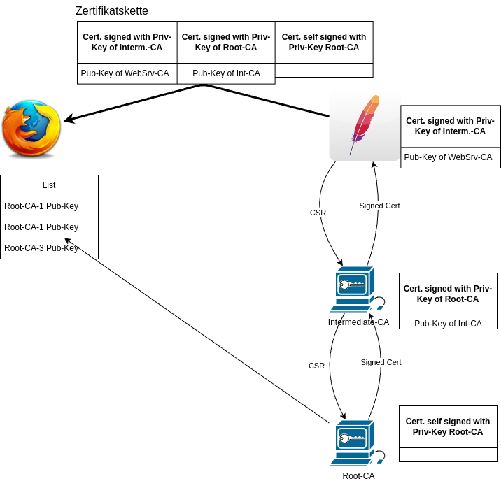
Firefox Support
Weitergehende Information von Mozilla zum Ablauf.
Oder das Bild hier (die Root-CA ist unten rechts, der Webserver oben rechts).

TLS-Zertifikate Praxis
+++ Ressourcen:
https://filestash.gibb.ch/view/IET-Share/sh-modules/iet-300/release2022/03_Arbeitsblaetter/AB300-05.pdf
https://de.wikipedia.org/wiki/Transport_Layer_Security
Zwecke:
- Authentizierung: Sicher sein, dass der richtige Verbindungspartner am Draht ist.
- Ende-zu-Ende-Verschlüsselung: Abhörsicherheit auf dem Übertragungsweg.
im WEB:
- Aus http:// wird https://
- Standard-Port 443 statt 80
- Ein Browser erlaubt Verbindungen mit Zertifikaten, die von einer Root-CA (Certification-Authority) gemäss einer Liste ausgestellt sind:
Chrome: https://chromium.googlesource.com/chromium/src/+/main/net/data/ssl/chrome_root_store/root_store.md
Firefox: Einstellungen-Zertifikate:
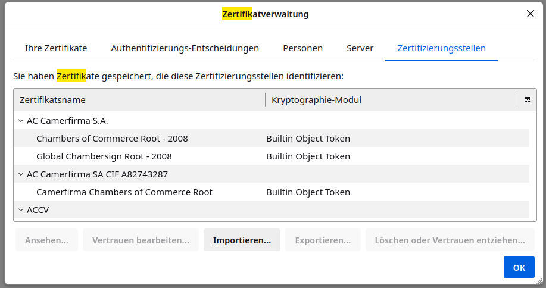
Ausstellung:
- Antrag (CSR Certificate Signing Request) wird erzeugt.
- CA prüft Antrag (stellt sicher, das er von Berechtigtem kommt).
- CA signiert und stell Zertifikat aus.
- Das signierte Zertifikat wird auf Webserver installiert.
Anzeige im Browser:
- Normale Anwender beachten nur das Schloss (und fürchten sich bei Warnungen)
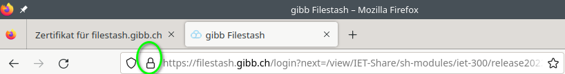
Das Zertifikat kann im Browser aber genauer untersucht werden:
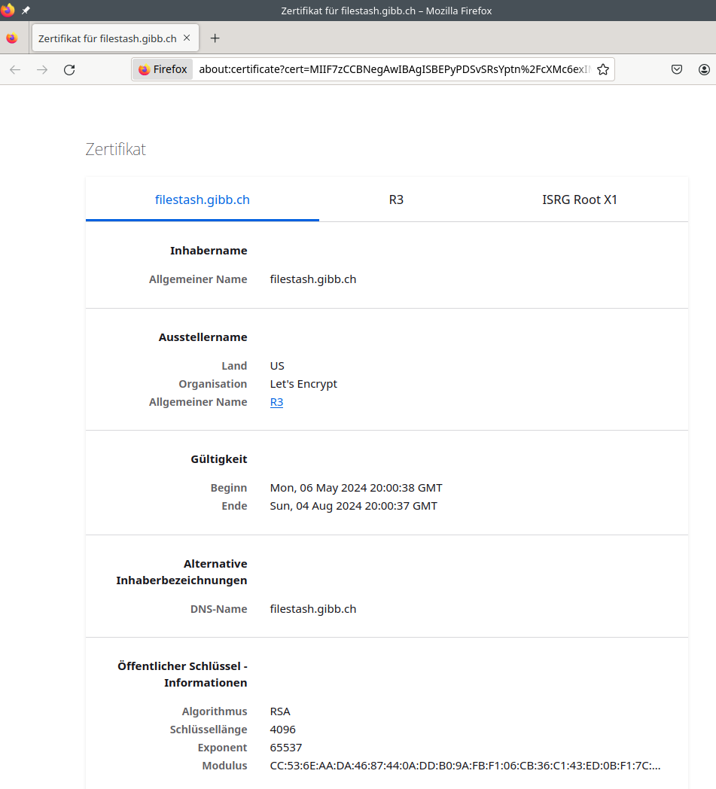
Let's encrypt
Nachdem Edward Snowden als NSA Mitarbeiter 2013 geheime Dokumente veröffentlichte, die zeigten, dass der US-Geheimdienst versuchte den gesamten Internetverkehr mitzuhören, wurde die Verschlüsselung mit HTTPS zum Standard.
Lets Encrypt ist ein Dienst/Organisation, welche kostenlose Zertifikate ausstellt https://letsencrypt.org/ und seit 2014 aktiv ist. Fast 80% des Web-Datenverkehrs ist mit Zertifikaten von Lets Encrypt verschlüsselt.
ACME
ACME (Automatic Certificate Management Environment)
Die Überprüfung und Ausstellung wird automatisiert ausgeführt, da ein Zertifikat nach Ablauf der Gültigkeitsdauer erneut ausgestellt und installiert werden muss. (Ein Let's Encrypt Zertifikat hat im Vergleich zu anderen Ausstellern nur eine kurze “Lebensdauer” von ein paar Wochen statt ein bis drei Jahre).
ACME API
Der Antrag, die Überprüfung und die Ausstellung geschehen über eine genau definierte API (https://datatracker.ietf.org/doc/html/draft-ietf-acme-acme-09)
Diverse Programme implementieren diese API. Für uns relevant ist der Certbot und LEGO (bei Traefik eingesetzt), evt. acme.sh (Eine gute Zusammenstellung von Software-Implementationen:https://acmeclients.com/)
Authentifizierung / Challenges
Wichtig ist zu wissen, wie Lets Encrypt überprüft, ob man für den (oder die) gewünschten Domains/Hostnamen authorisiert ist, ob man diese wirklich besitzt.
Dies geschieht mit sogenannten Challenges: Ein von Lets Encrypt vorgegebener Token muss auf der eigenen Domain installiert werden, um zu beweisen, dass man sie “besitzt”. Dies wird vor der Zertifikatsausstellung geprüft.
Es gibt verschiedene Typen von Challenges:
https://letsencrypt.org/docs/challenge-types/
Wir beschränken uns auf häufigst genutzten Typen:
- HTTP-01 challenge
- DNS-01 challenge
- TLS-ALPN-01
(TLS-ALPN-01 ist für die Verwendung bei Traeffik die beste Wahl)
- Bei der HTTP-01 Challenge muss man unter http://meinedomain/.well-known/acme-challange/ ein File anlegen, und dieses muss von dem von Letsencrypt vorgegeben Inhalt sein. Let'sencrypt macht ein
wget http://meinedomain/.well-known/acme-challange/<XYZ>und überprüft, ob der Inhalt des Files korrekt ist. - Bei der DNS-01 Challange muss ein TXT Record auf dem DNS Server (in der Zone der Domain) hinzugefügt werden. Die Überprüfung erfolgt durch “
dig TXT _acme-challenge.<meinedomain>” . Nach Ausstellen des Zertifikats wird der TXT Record wieder entfernt.
Certbot
Dies ist ein ACME-Client, welcher mit der Let's Encrypt ACME spricht.
Certbot kann unter Ubuntu mitsudo apt install certbot python3-certbot-apache python3-certbot-nginx
installiert werden.
Certbot für Ubuntu 22.04 von Digital Ocean:
https://www.digitalocean.com/community/tutorials/how-to-secure-apache-with-let-s-encrypt-on-ubuntu
Alternativ (aber gemäss eff-certbot nicht wirklich empfohlen) ist es als Docker-Image vorhanden (certbot/certbot)
Ausführliche Dokumentation ist hier zu finden:
https://eff-certbot.readthedocs.io/en/stable/install.html
https://eff-certbot.readthedocs.io/en/stable/using.html
Docker:
https://eff-certbot.readthedocs.io/en/stable/install.html#alternative-1-docker
Praxis mit Smartlearn Umgebung
Für unsere Umgebung (....m300.smartlearn.ch) wird dies so gemacht:
HTTP-01 Challange:
Das Webverzeichnis http://86.118.61.125/.well-known/acme-challange (und aller Hosteinträge die auf diese IP zeigen) ist über SFTP
User sftpuser mit allen SSH-Klassenkeys erreichbar
DNS-01 Challange:
Mit Hilfe der Klassen Bind-Keys ist das Eintragen der TXT-Einträge möglich.
Hier ein konkretes Beispiel mit der Demoklasse inf2021demo:
Aufgabe 1: Ausstellen eines Zertifikates für meintest.inf2022demo.m300.smartlearn.ch unter Verwendung von HTTP-01 Challenge:
hier das Vorgehen unter vmLP1 mit lokalem Certbot:
sudo certbot certonly --manual -d meintest.inf2022demo.m300.smartlearn.ch
Wenn Sie certbot unter Docker verwenden, ist folgende Kommandozeile gleichwertig:sudo docker run -it --rm --name certbot \
-v "/etc/letsencrypt:/etc/letsencrypt" \
-v "/var/lib/letsencrypt:/var/lib/letsencrypt" \
certbot/certbot certonly --manual -d meintest.inf2022demo.m300.smartlearn.ch
Sie erzeugt einen Einwegcontainer (--rm er wird nach der Benutzung gelöscht)
die Zertifikate und andere persistente Daten werden auf Host-Volumes (/etc/letsencrypt und /var/lib/letsencrypt) abgelegt (-v)
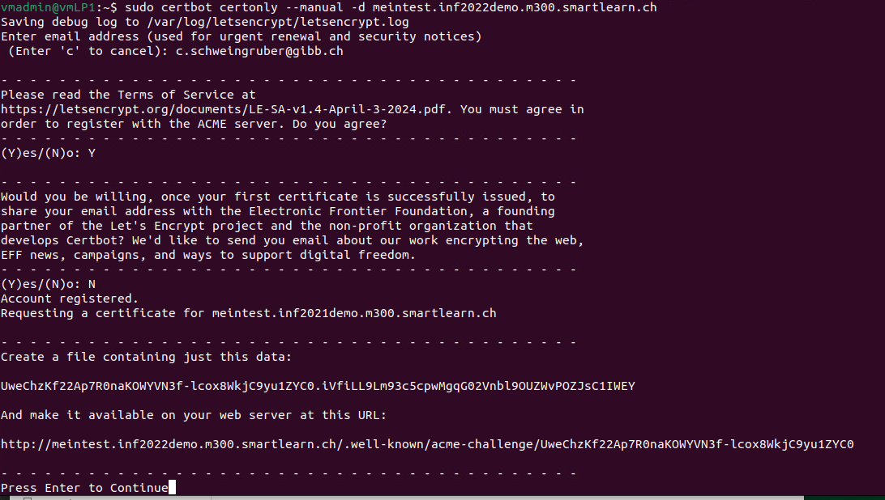
Dieses Token muss jetzt per SFTP ins webroot kopiert werden. (in einem zweiten Terminal)
zuerst wird es lokal gespeichert:echo "UweChzKf22Ap7R0naKOWYVN3f-lcox8WkjC9yu1ZYC0.iVfiLL9Lm93c5cpwMgqG02Vnbl9OUZWvPOZJsC1IWEY" > UweChzKf22Ap7R0naKOWYVN3f-lcox8WkjC9yu1ZYC (ein File mit dem gefordertem Inhalt wird erzeugt)
Dieses wird nun per SFTP ins webroot übertragen (wichtig: der user muss sftpuser heissen!):sftp -i .ssh/id_inf2022demo sftpuser@86.118.61.125
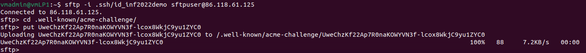
Einen DNS-Eintrag für die gewünschte Domain muss noch gemacht werden und auf den moduldns-Server zeigen:
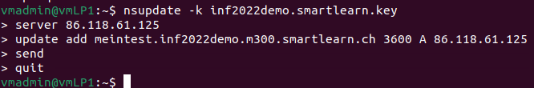
Testen im Browser:
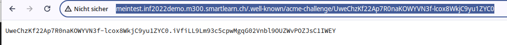
oder wget "http://meintest.inf2022demo.m300.smartlearn.ch/.well-known/acme-challenge/UweChzKf22Ap7R0naKOWYVN3f-lcox8WkjC9yu1ZYC0"
Im anderen Terminal <enter> drücken um das Zertifikat ausstellen zu lassen.
Dann wird das Zertifikat ausgestellt:
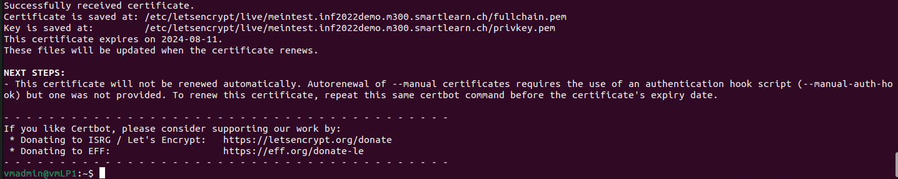
Es ist unter /etc/letsencrypt/live/meintest.inf2021demo.m300.smartlearn.ch
verfügbar:
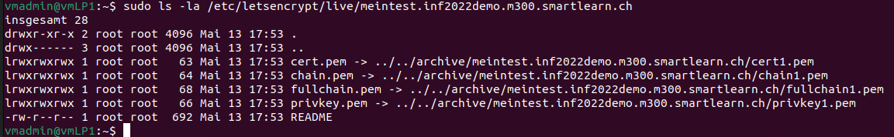
Aufgabe 2: Erstelle ein Zertifikat für meintest2.inf2022demo.m300.smartlearn.ch unter Verwendung von DNS-01 Challenge:
hier das Vorgehen unter vmLP1 mit lokalem Certbot:
sudo certbot certonly --manual --preferred-challenge dns -d meintest.inf2022demo.m300.smartlearn.ch
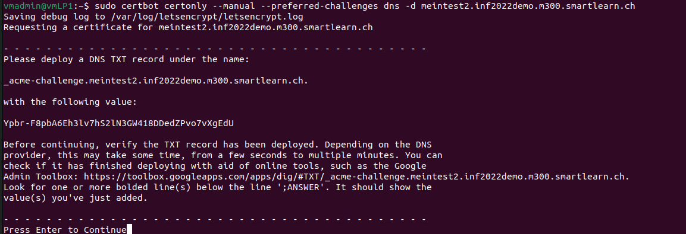
Gefordertes Token per nsupdate einfügen:
_acme-challenge.meintest2.inf2022demo.m300.smartlearn.ch 3600 TXT "Ypbr-F8pbA6Eh3lv7hS2lN3GW418DDedZPvo7vXgEdU"
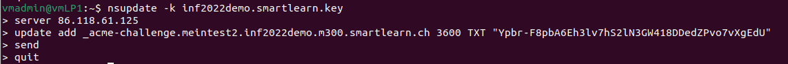
Im anderen Terminal <enter> drücken um das Zertifikat ausstellen zu lassen.
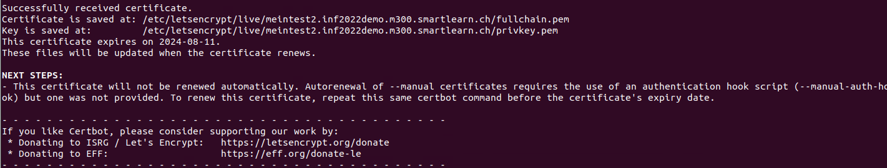
Es ist unter /etc/letsencrypt/live/meintest2.inf2022demo.m300.smartlearn.ch
verfügbar.
Normalerweise wird das Ganze automatisiert, denn Lets Encryt-Zertifikate sind nur 90 Tage gültig.
Dem Programm, das die Zertifikate überwacht, muss dabei Zugriff auf die entsprechenden Ressourcen gegeben werden.
Zusatzaufgaben:
Überprüfen Sie die erzeugten Zertifikate:
- mit openssl (
openssl x509 -in mycert.pem -text -noout) - mit dem Browser, nachdem Sie diese auf einem Webserver (apache, nginx, traeffik + http-server) installiert haben.
Scripten Sie die automatische Erneuerung der Zertifikate.
HTTP-01:
Webroot mounten und per certbot --webroot ansprechen
zB. gemäss https://www.linuxbabe.com/security/letsencrypt-webroot-tls-certificate
DNS-01:
gemäss https://certbot-dns-rfc2136.readthedocs.io/en/stable/
Für ISDS - Modul 231
Im Modul 231 - Datenschutz und Datensicherheit haben Sie bereits einiges gelernt. Hier finden sie die Modulunterlagen als zip, zu lesen in einem Browser